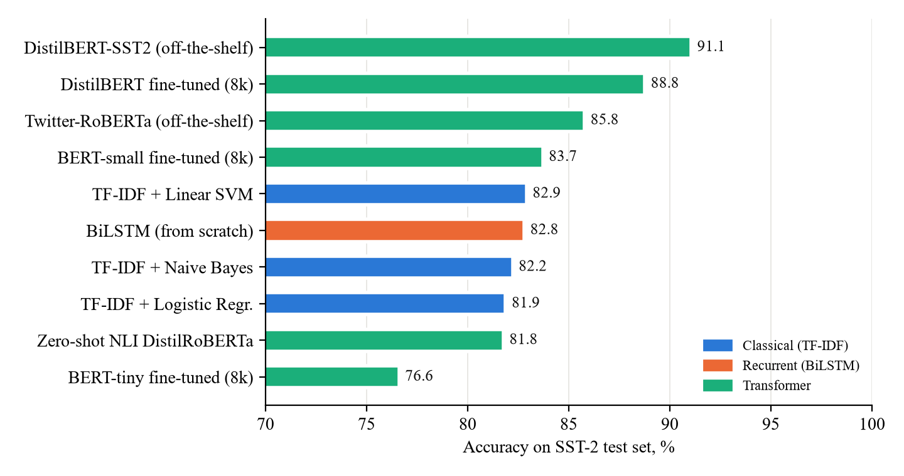
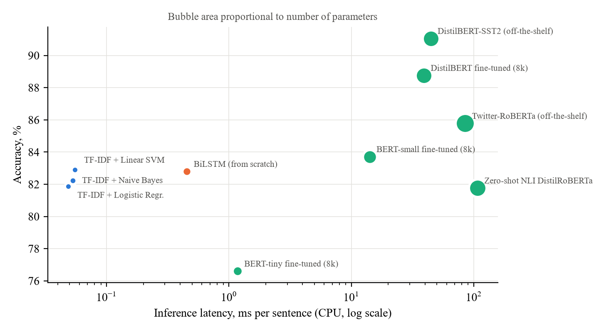
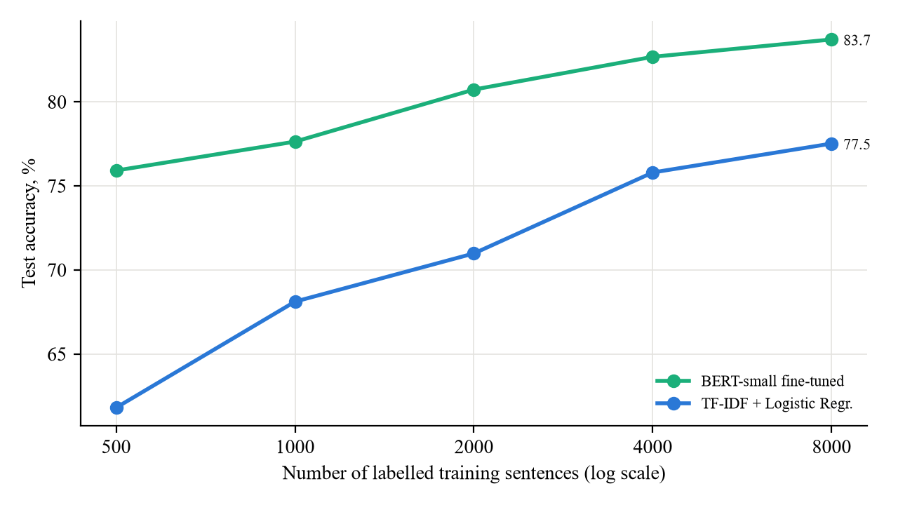
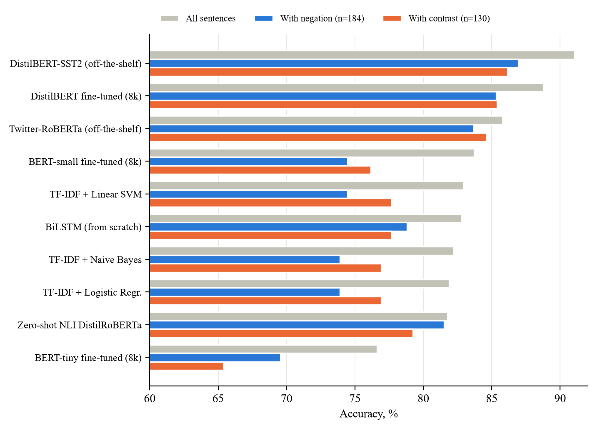
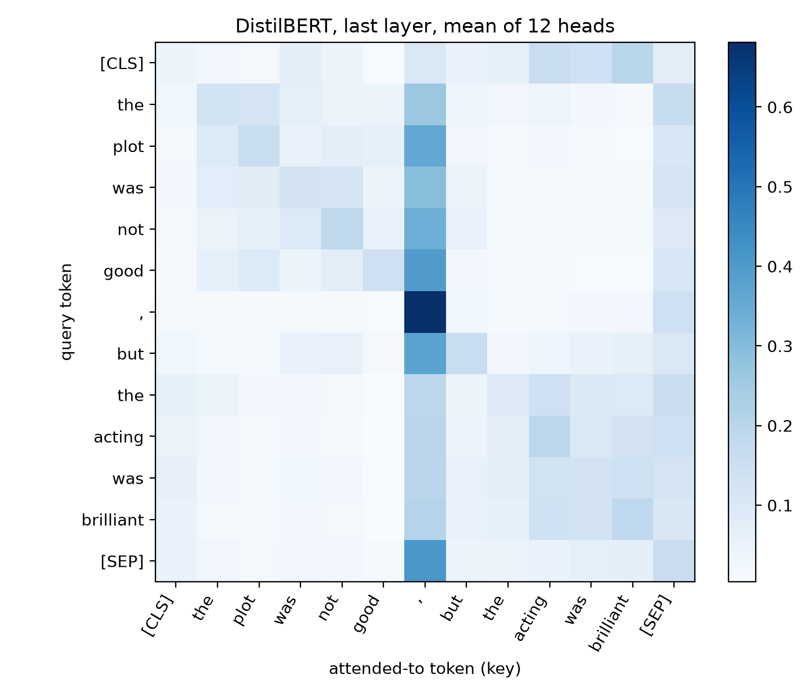

VILNIUS TECH · ಗುಂಪು ಪ್ರಾಜೆಕ್ಟ್ · Study notes in Kannada
ಟ್ರಾನ್ಸ್ಫಾರ್ಮರ್ ಮತ್ತು ಎನ್ಎಲ್ಪಿ
ಕನ್ನಡದಲ್ಲಿ ಸರಳ ಅಧ್ಯಯನ ಟಿಪ್ಪಣಿಗಳು
ನಮ್ಮ ಪ್ರಾಜೆಕ್ಟ್ “Transformers and their application in NLP tasks” ಅನ್ನು ನಮ್ಮ ಊರಿನ ಉದಾಹರಣೆಗಳೊಂದಿಗೆ, ಸುಲಭ ಕನ್ನಡದಲ್ಲಿ ಮೊದಲಿನಿಂದ ಕೊನೆಯವರೆಗೆ ಅರ್ಥಮಾಡಿಕೊಳ್ಳಲು ಮತ್ತು ವೈವಾ–ಪ್ರೆಸೆಂಟೇಶನ್ಗೆ ಸಿದ್ಧರಾಗಲು.
ತಯಾರಿಕೆ: Shashikanth Hosur Ramegowda · Shaeed Khan Vilnius Gediminas Technical University · Engineering of Artificial Intelligence
ಓದುವ ಮುನ್ನHOW TO USE THESE NOTES
ಈ ಟಿಪ್ಪಣಿಗಳು ನಿಮಗೆ ನಿಮ್ಮದೇ ಭಾಷೆಯಲ್ಲಿ ವಿಷಯ ಅರ್ಥವಾಗಲಿ ಎಂದು ಮಾಡಿದ್ದು. ಇಂಗ್ಲಿಷ್ ಪುಸ್ತಕ ಓದಿ ತಲೆ ಕೆಡಿಸಿಕೊಳ್ಳುವ ಬದಲು, ಮೊದಲು ಇಲ್ಲಿ ಕತೆಯ ರೂಪದಲ್ಲಿ ಓದಿ; ನಂತರ ನಮ್ಮ ಪೇಪರ್ ಮತ್ತು ಸ್ಲೈಡ್ಗಳನ್ನು ನೋಡಿದರೆ ಎಲ್ಲವೂ ಪರಿಚಿತ ಅನಿಸುತ್ತದೆ.
ಮೂರು ಮುಖ್ಯ ವಿಷಯಗಳು
ಇಂಗ್ಲಿಷ್ ಪದಗಳು ಬ್ರಾಕೆಟ್ನಲ್ಲಿ. ಪ್ರೆಸೆಂಟೇಶನ್ ಮತ್ತು ವೈವಾದಲ್ಲಿ ನೀವು ಇಂಗ್ಲಿಷ್ ಪಾರಿಭಾಷಿಕ ಪದಗಳನ್ನೇ ಹೇಳಬೇಕು. ಹಾಗಾಗಿ ಪ್ರತಿ ಪದವನ್ನು ಕನ್ನಡದಲ್ಲಿ ವಿವರಿಸಿ, ಬ್ರಾಕೆಟ್ನಲ್ಲಿ (token, attention…) ಕೊಟ್ಟಿದ್ದೇವೆ.
ಸಂಖ್ಯೆಗಳೆಲ್ಲ ನಿಜ. ನಮ್ಮ ಪ್ರಯೋಗದ ನಿಜವಾದ ಫಲಿತಾಂಶಗಳು (ಇಂಗ್ಲಿಷ್ ಸಿನಿಮಾ ವಿಮರ್ಶೆಗಳ ಡೇಟಾ SST-2 ಮೇಲೆ). ಟೆಸ್ಟ್ ವಾಕ್ಯಗಳು 872.
ಕನ್ನಡ ವಾಕ್ಯಗಳು ಅರ್ಥವಾಗಲೆಂದು ಮಾಡಿದ ಉದಾಹರಣೆಗಳು. ಅವು ನಮ್ಮ ಪ್ರಯೋಗದ ಭಾಗವಲ್ಲ (ನಮ್ಮ ಪ್ರಯೋಗ ಇಂಗ್ಲಿಷ್ ಡೇಟಾದಲ್ಲಿ ನಡೆದಿದೆ). ಕನ್ನಡ ಉದಾಹರಣೆಗಳಲ್ಲಿರುವ ಶೇಕಡಾ ಸಂಖ್ಯೆಗಳು ಕಾಲ್ಪನಿಕ ಎಂದು ಪ್ರತಿ ಕಡೆ ಗುರುತಿಸಿದ್ದೇವೆ.
ಈ ಪುಸ್ತಿಕೆಯಲ್ಲಿರುವ ಬಣ್ಣದ ಪೆಟ್ಟಿಗೆಗಳು
ನಮ್ಮ ಊರಿನ ಉದಾಹರಣೆ
ಹಸಿರು ಪೆಟ್ಟಿಗೆ: ಕರ್ನಾಟಕದ ದೈನಂದಿನ ಜೀವನದ ಹೋಲಿಕೆ.
ಪರೀಕ್ಷೆ / ವೈವಾಗೆ
ನೇರಳೆ ಪೆಟ್ಟಿಗೆ: ಇದನ್ನು ಖಂಡಿತ ನೆನಪಿಡಿ.
ನೆನಪಿಡಿ
ಹಳದಿ ಪೆಟ್ಟಿಗೆ: ಮುಖ್ಯ ಅಂಶ ಅಥವಾ ಸಂಖ್ಯೆ.
ಎಚ್ಚರ
ಕೆಂಪು ಪೆಟ್ಟಿಗೆ: ಸಾಮಾನ್ಯ ತಪ್ಪು, ಮಿತಿ.
ಇದರಲ್ಲಿ ಏನೇನಿದೆ
ಅಧ್ಯಾಯ 1 · ಎನ್ಎಲ್ಪಿ ಅಂದರೆ ಏನು?4
ಅಧ್ಯಾಯ 2 · ನಮ್ಮ ಪ್ರಾಜೆಕ್ಟ್: ಒಂದು ಕತೆ5
ಅಧ್ಯಾಯ 3 · ಹಳೆಯ ವಿಧಾನಗಳು7
ಅಧ್ಯಾಯ 4 · ಟ್ರಾನ್ಸ್ಫಾರ್ಮರ್: ಐದು ಐಡಿಯಾ9
ಅಧ್ಯಾಯ 5 · ಕನ್ನಡ ಮತ್ತು ಟ್ರಾನ್ಸ್ಫಾರ್ಮರ್15
ಅಧ್ಯಾಯ 6 · ನಮ್ಮ ಪ್ರಯೋಗ ಹೇಗೆ ನಡೆಯಿತು17
ಅಧ್ಯಾಯ 7 · ಫಲಿತಾಂಶಗಳು: ಸಂಖ್ಯೆಗಳು ಏನು ಹೇಳುತ್ತವೆ?21
ಅಧ್ಯಾಯ 8 · ಯಾವ ಮಾಡೆಲ್ ಯಾವಾಗ?28
ಅಧ್ಯಾಯ 9 · ವೈವಾ ಪ್ರಶ್ನೆ–ಉತ್ತರ29
ಅಧ್ಯಾಯ 10 · ಪದಕೋಶ34
ಅಧ್ಯಾಯ 11 · ಸ್ವಯಂ ಪರೀಕ್ಷೆ ಮತ್ತು ಭಾಷಣ ಅಭ್ಯಾಸ36
ಅಧ್ಯಾಯ 12 · ಒಂದು ಪುಟದ ಸಾರಾಂಶ40
ಓದುವ ಕ್ರಮ
ಮೊದಲ ಬಾರಿಗೆ ಅಧ್ಯಾಯ 1 ರಿಂದ 4 ಅನ್ನು ಕ್ರಮವಾಗಿ ಓದಿ (ಸುಮಾರು ಒಂದೂವರೆ ಗಂಟೆ). ನಂತರ ಅಧ್ಯಾಯ 7 (ಫಲಿತಾಂಶ), ಅಧ್ಯಾಯ 9 (ವೈವಾ ಪ್ರಶ್ನೆಗಳು) ಮತ್ತು ಅಧ್ಯಾಯ 12 (ಒಂದು ಪುಟದ ಸಾರಾಂಶ) ಪರೀಕ್ಷೆಯ ಹಿಂದಿನ ದಿನ ಓದಿ.
ಅಧ್ಯಾಯ 1 · ಎನ್ಎಲ್ಪಿ ಅಂದರೆ ಏನು?WHAT IS NLP?
ನೀವು ಮೊಬೈಲ್ನಲ್ಲಿ ಕನ್ನಡದಲ್ಲಿ ಟೈಪ್ ಮಾಡುವಾಗ ಕೀಬೋರ್ಡ್ ಮುಂದಿನ ಪದವನ್ನು ಸೂಚಿಸುತ್ತದೆ. ಗೂಗಲ್ ಟ್ರಾನ್ಸ್ಲೇಟ್ ಕನ್ನಡವನ್ನು ಇಂಗ್ಲಿಷ್ಗೆ ಅನುವಾದಿಸುತ್ತದೆ. ChatGPT ನಿಮ್ಮ ಪ್ರಶ್ನೆಗೆ ಕನ್ನಡದಲ್ಲೇ ಉತ್ತರ ಕೊಡುತ್ತದೆ. ಇವೆಲ್ಲದರ ಹಿಂದೆ ಇರುವ ವಿಜ್ಞಾನವೇ ಸ್ವಾಭಾವಿಕ ಭಾಷಾ ಸಂಸ್ಕರಣೆ(Natural Language Processing, ಸಂಕ್ಷಿಪ್ತವಾಗಿ NLP). ಅಂದರೆ ಮನುಷ್ಯರು ಮಾತನಾಡುವ ಮತ್ತು ಬರೆಯುವ ಭಾಷೆಯನ್ನು ಕಂಪ್ಯೂಟರ್ ಓದಿ, ಅರ್ಥಮಾಡಿಕೊಂಡು, ಬಳಸುವಂತೆ ಮಾಡುವುದು.
ಇಲ್ಲಿ ಒಂದು ಮುಖ್ಯ ವಿಷಯ: ಕಂಪ್ಯೂಟರ್ಗೆ ಅಕ್ಷರಗಳು ಗೊತ್ತಿಲ್ಲ, ಅದಕ್ಕೆ ಗೊತ್ತಿರುವುದು ಸಂಖ್ಯೆಗಳು ಮಾತ್ರ. ಹಾಗಾಗಿ ಎನ್ಎಲ್ಪಿಯ ಮೊದಲ ಕೆಲಸ ಪದಗಳನ್ನು ಸಂಖ್ಯೆಗಳಾಗಿ ಬದಲಾಯಿಸುವುದು; ಎರಡನೇ ಕೆಲಸ ಆ ಸಂಖ್ಯೆಗಳಿಂದ ಅರ್ಥವನ್ನು ಹೊರತೆಗೆಯುವುದು. ಈ ಎರಡನೇ ಕೆಲಸವನ್ನು ಇಂದು ಅತ್ಯುತ್ತಮವಾಗಿ ಮಾಡುವ ತಂತ್ರಜ್ಞಾನವೇ ಟ್ರಾನ್ಸ್ಫಾರ್ಮರ್ (Transformer). ChatGPT ಯ GPT ಅಂದರೆ Generative Pre-trained Transformer; ಗೂಗಲ್ನ BERT ಕೂಡ ಟ್ರಾನ್ಸ್ಫಾರ್ಮರ್.
ನಮ್ಮ ಸುತ್ತಮುತ್ತಲಿನ ಎನ್ಎಲ್ಪಿ
ಕೆಲಸ
ಕರ್ನಾಟಕದ ಉದಾಹರಣೆ
ಭಾವನೆ ವಿಶ್ಲೇಷಣೆ (Sentiment analysis)
ಕನ್ನಡ ಸಿನಿಮಾದ ವಿಮರ್ಶೆ ಒಳ್ಳೆಯದೋ ಕೆಟ್ಟದೋ? ಹೋಟೆಲ್ ರಿವ್ಯೂನಲ್ಲಿ “ಮಸಾಲೆ ದೋಸೆ ಚೆನ್ನಾಗಿತ್ತು” ಎಂದರೆ ಧನಾತ್ಮಕ. ← ನಮ್ಮ ಪ್ರಾಜೆಕ್ಟ್ ಇದೇ.
ಪಠ್ಯ ವರ್ಗೀಕರಣ (Text classification)
ನಮ್ಮ ಮೆಟ್ರೋ ಅಥವಾ ಬಿಎಂಟಿಸಿಗೆ ಬಂದ ದೂರು “ಗೇಟ್ ತೆರೆಯುತ್ತಿಲ್ಲ” ಯಾವ ವಿಭಾಗಕ್ಕೆ ಹೋಗಬೇಕು?
ಯಂತ್ರ ಅನುವಾದ (Machine translation)
ಹಂಪಿಯ ಮಾಹಿತಿ ಫಲಕವನ್ನು ವಿದೇಶಿ ಪ್ರವಾಸಿಗರಿಗಾಗಿ ಕನ್ನಡದಿಂದ ಇಂಗ್ಲಿಷ್ಗೆ ಬದಲಾಯಿಸುವುದು.
ಪ್ರಶ್ನೋತ್ತರ (Question answering)
“ನಾಳೆ ಮೈಸೂರಿನಲ್ಲಿ ಮಳೆ ಬರುತ್ತದೆಯೇ?” ಎಂದು ಧ್ವನಿ ಸಹಾಯಕನನ್ನು ಕೇಳುವುದು.
ಸಾರಾಂಶ (Summarisation)
ಉದ್ದದ ಪತ್ರಿಕೆ ಲೇಖನವನ್ನು ಮೂರು ಸಾಲಿನಲ್ಲಿ ಹೇಳುವುದು.
ಚಾಟ್ಬಾಟ್ (Chatbot)
ಬಸ್ ಟಿಕೆಟ್ ಬುಕ್ ಮಾಡಲು ಅಥವಾ ಬ್ಯಾಂಕ್ ವಿಚಾರಣೆಗೆ ಕನ್ನಡದಲ್ಲಿ ಮಾತನಾಡುವ ಸಹಾಯಕ.
ನಮ್ಮ ಪ್ರಾಜೆಕ್ಟ್ನ ವಿಷಯ: ಭಾವನೆ ವಿಶ್ಲೇಷಣೆ
ಒಂದು ವಾಕ್ಯ ಕೊಟ್ಟರೆ, ಅದು ಒಳ್ಳೆಯ ಭಾವನೆಯದ್ದೋ (positive) ಅಥವಾ ಕೆಟ್ಟ ಭಾವನೆಯದ್ದೋ (negative) ಎಂದು ಕಂಪ್ಯೂಟರ್ ಹೇಳಬೇಕು. ಇದು ಕೇಳಲು ಸುಲಭ; ಆದರೆ ಕೆಲವು ವಾಕ್ಯಗಳು ಮನುಷ್ಯರಿಗೂ ಕಷ್ಟ.
ಕನ್ನಡ ವಾಕ್ಯ (ಉದಾಹರಣೆ)
ಫಲಿತಾಂಶ
ಎಷ್ಟು ಕಷ್ಟ?
ಸಿನಿಮಾ ತುಂಬಾ ಚೆನ್ನಾಗಿದೆ.
ಧನಾತ್ಮಕ
ಸುಲಭ
ಊಟ ರುಚಿಯಾಗಿಲ್ಲ, ಸರ್ವೀಸ್ ಕೂಡ ತಡ.
ಋಣಾತ್ಮಕ
ಸುಲಭ
ಈ ಸಿನಿಮಾ ಕೆಟ್ಟದ್ದಲ್ಲ.
ಧನಾತ್ಮಕ
ಮಧ್ಯಮ: “ಕೆಟ್ಟದ್ದು” ಎಂಬ ಪದ ಇದೆ, ಆದರೆ ನಿರಾಕರಣೆ (negation)
ಹಾಡುಗಳು ಚೆನ್ನಾಗಿವೆ, ಆದರೆ ಕಥೆ ಬೋರು.
ಮಿಶ್ರ
ಕಷ್ಟ: ವೈದೃಶ್ಯ (contrast)
ಈ ಸಿನಿಮಾ ನೋಡುತ್ತಾ ಎರಡೂವರೆ ಗಂಟೆ ಸೊಗಸಾದ ನಿದ್ದೆ ಬಂತು!
ಋಣಾತ್ಮಕ
ತುಂಬಾ ಕಷ್ಟ: ವ್ಯಂಗ್ಯ (sarcasm)
ವೈವಾಗೆ
ನಮ್ಮ ಪ್ರಾಜೆಕ್ಟ್ನ ಕಾರ್ಯ (task): binary sentiment classification. ವಾಕ್ಯ ಕೊಟ್ಟರೆ negative (0) ಅಥವಾ positive (1) ಎಂದು ಹೇಳುವುದು. ನಾವು ಇದನ್ನು ಆರಿಸಿದ ಕಾರಣ: ಇದು ಅತ್ಯಂತ ಸಾಮಾನ್ಯ ಎನ್ಎಲ್ಪಿ ಬಳಕೆ, ಎಲ್ಲಾ ಮಾಡೆಲ್ಗಳಿಗೂ ಹೋಲಿಸಲು ಪ್ರಕಟಿತ ಫಲಿತಾಂಶಗಳಿವೆ, ಮತ್ತು ನಿರಾಕರಣೆ, ವೈದೃಶ್ಯ, ವ್ಯಂಗ್ಯದಂತಹ ಕಠಿಣ ಸಂದರ್ಭಗಳಲ್ಲಿ ಮಾಡೆಲ್ ನಿಜವಾಗಿಯೂ ಸಂದರ್ಭ ಅರ್ಥಮಾಡಿಕೊಳ್ಳುತ್ತದೆಯೇ ಎಂದು ಪರೀಕ್ಷಿಸಬಹುದು.
ಅಧ್ಯಾಯ 2 · ನಮ್ಮ ಪ್ರಾಜೆಕ್ಟ್: ಒಂದು ಕತೆTHE PROJECT AS A STORY
ಕಾಲ್ಪನಿಕ ಕತೆ: ರಿವ್ಯೂ ರೇಡಾರ್
ಬೆಂಗಳೂರಿನ ಒಂದು ಸ್ಟಾರ್ಟ್ಅಪ್ “ರಿವ್ಯೂ ರೇಡಾರ್” ಎಂಬ ಕನ್ನಡ ಸಿನಿಮಾ ಆಪ್ ಮಾಡಿದೆ. ದಿನಕ್ಕೆ ಸಾವಿರಾರು ಪ್ರೇಕ್ಷಕರು ವಿಮರ್ಶೆ ಬರೆಯುತ್ತಾರೆ: “ಹಾಡುಗಳು ಸೂಪರ್”, “ಕಥೆ ಬೋರು”. ಮ್ಯಾನೇಜರ್ಗೆ ಬೇಕಾಗಿರುವುದು: ಕೆಟ್ಟ ವಿಮರ್ಶೆಗಳನ್ನು ತಕ್ಷಣ ಗುರುತಿಸುವುದು, ಹಾಗೆ ಮಾಡಿದರೆ ಗ್ರಾಹಕ ಸೇವಾ ತಂಡ ಬೇಗ ಸ್ಪಂದಿಸಬಹುದು.
ಕಂಪನಿಯ ಬಳಿ ಇರುವುದು: ಒಂದು ಸಾಮಾನ್ಯ ಲ್ಯಾಪ್ಟಾಪ್ (ದುಬಾರಿ GPU ಇಲ್ಲ), ಕೈಯಿಂದ ಗುರುತು ಹಾಕಿದ 8,000 ವಿಮರ್ಶೆಗಳು, ಮತ್ತು ಒಂದು ಮಧ್ಯಾಹ್ನದ ಸಮಯ. ಮೂವರು ಸ್ನೇಹಿತರು ಮೂರು ಸಲಹೆ ಕೊಡುತ್ತಾರೆ:
ರಮೇಶ: “ಪದ ಎಣಿಸೋಣ”
ಪದ ಎಣಿಕೆ ಮಾಡೆಲ್ (TF-IDF + SVM). ಸರಳ, ವೇಗ, ಯಾವ ಕಂಪ್ಯೂಟರ್ನಲ್ಲೂ ಓಡುತ್ತದೆ.
ಸುಮಾ: “ನ್ಯೂರಲ್ ನೆಟ್ವರ್ಕ್ ಕಲಿಸೋಣ”
BiLSTM: ಮೊದಲಿನಿಂದ ತರಬೇತಿ. ಆಧುನಿಕ ಅನಿಸುತ್ತದೆ.
ಕಾವ್ಯ: “ಟ್ರಾನ್ಸ್ಫಾರ್ಮರ್ನಿಂದ ಶುರು ಮಾಡೋಣ”
ಈಗಾಗಲೇ ಬಹಳ ಓದಿರುವ ಮಾಡೆಲ್ ತೆಗೆದುಕೊಂಡು ನಮ್ಮ ವಿಮರ್ಶೆಗಳ ಮೇಲೆ fine-tune ಮಾಡುವುದು.
ನಮ್ಮ ಪ್ರಾಜೆಕ್ಟ್ ಅಂದರೆ ಈ ಮೂವರ ನಡುವೆ ನಡೆದ ನ್ಯಾಯವಾದ ಸ್ಪರ್ಧೆ. ಎಲ್ಲರೂ ಒಂದೇ ಪ್ರಶ್ನೆಪತ್ರಿಕೆ (ಒಂದೇ test set), ಒಂದೇ ಲ್ಯಾಪ್ಟಾಪ್, ಒಂದೇ ನಿಯಮಗಳು. ಕತೆ ಕಾಲ್ಪನಿಕ, ಆದರೆ ಪ್ರತಿ ಸಂಖ್ಯೆ ನಿಜ.
ನಮ್ಮ ಐದು ಸಂಶೋಧನೆ ಪ್ರಶ್ನೆಗಳು
#
ಸಂಶೋಧನೆ ಪ್ರಶ್ನೆ (Research question)
ರಿವ್ಯೂ ರೇಡಾರ್ ಭಾಷೆಯಲ್ಲಿ
RQ1
ಟ್ರಾನ್ಸ್ಫಾರ್ಮರ್ ಹಳೆಯ ವಿಧಾನಗಳಿಗಿಂತ ಎಷ್ಟು ಹೆಚ್ಚು ನಿಖರ (accurate)?
“ರಮೇಶನ ಸರಳ ಮಾಡೆಲ್ ಬಿಟ್ಟು ಹೊಸದಕ್ಕೆ ಹೋಗುವುದು ಸರಿಯೇ?”
RQ2
ಆ ಸುಧಾರಣೆಗೆ ಕೊಡಬೇಕಾದ ಬೆಲೆ ಎಷ್ಟು (ತರಬೇತಿ ಸಮಯ, ವೇಗ, ಗಾತ್ರ)?
“ನಮ್ಮ ಲ್ಯಾಪ್ಟಾಪ್ನಲ್ಲಿ ಸಾಕಷ್ಟು ವೇಗವಾಗಿ ಓಡುತ್ತದೆಯೇ?”
RQ3
ಲೇಬಲ್ ಮಾಡಿದ ಡೇಟಾ ಎಷ್ಟು ಬೇಕು?
“ಕೇವಲ 500 ವಿಮರ್ಶೆ ಲೇಬಲ್ ಇದ್ದರೆ ಏನಾಗುತ್ತದೆ?”
RQ4
ಬೇರೆಯವರು ಈಗಾಗಲೇ ತಯಾರಿಸಿದ (ready-made) ಅಥವಾ zero-shot ಮಾಡೆಲ್ ಎಷ್ಟು ಒಳ್ಳೆಯದು?
“ತರಬೇತಿ ಕೊಡದೆ ಡೌನ್ಲೋಡ್ ಮಾಡಿ ಬಳಸಬಹುದೇ?”
RQ5
ನಿರಾಕರಣೆ (negation) ಮತ್ತು ವೈದೃಶ್ಯ (contrast) ಇರುವ ವಾಕ್ಯಗಳಲ್ಲಿ ಟ್ರಾನ್ಸ್ಫಾರ್ಮರ್ ಉತ್ತಮವೇ?
ಪ್ರಶ್ನೆ: ಸಾಮಾನ್ಯ ಲ್ಯಾಪ್ಟಾಪ್ ಮತ್ತು ಕೆಲವು ಸಾವಿರ ಲೇಬಲ್ ಮಾತ್ರ ಇದ್ದಾಗ, ಟ್ರಾನ್ಸ್ಫಾರ್ಮರ್ ಹಳೆಯ ವಿಧಾನಗಳಿಗಿಂತ ಎಷ್ಟು ಉತ್ತಮ, ಮತ್ತು ಅದಕ್ಕೆ ಏನು ಬೆಲೆ ತೆರಬೇಕು?
ವಿಧಾನ: ಒಂದೇ ಕಾರ್ಯ (ಭಾವನೆ ವಿಶ್ಲೇಷಣೆ), ಒಂದೇ 872 ಟೆಸ್ಟ್ ವಾಕ್ಯಗಳು, 10 ಮಾಡೆಲ್ಗಳು, 4 ಕುಟುಂಬಗಳು: ಪದ ಎಣಿಕೆ, BiLSTM, ನಾವೇ ಫೈನ್-ಟ್ಯೂನ್ ಮಾಡಿದ ಟ್ರಾನ್ಸ್ಫಾರ್ಮರ್ಗಳು, ready-made ಟ್ರಾನ್ಸ್ಫಾರ್ಮರ್ಗಳು.
ಉತ್ತರ: ಸಾಕಷ್ಟು ದೊಡ್ಡ ಟ್ರಾನ್ಸ್ಫಾರ್ಮರ್ ಸ್ಪಷ್ಟವಾಗಿ ಗೆಲ್ಲುತ್ತದೆ: ಕೇವಲ 8,000 ವಾಕ್ಯಗಳಲ್ಲಿ ಫೈನ್-ಟ್ಯೂನ್ ಮಾಡಿದ DistilBERT 88.8%, ಆದರೆ ಎಲ್ಲಾ 65,349 ವಾಕ್ಯಗಳಲ್ಲಿ ಕಲಿತ ಅತ್ಯುತ್ತಮ ಸಾಂಪ್ರದಾಯಿಕ ಮಾಡೆಲ್ 82.9%. ಬೆಲೆ: ಉತ್ತರಿಸಲು ಸುಮಾರು 710 ಪಟ್ಟು ಹೆಚ್ಚು ಸಮಯ. ತರಬೇತಿ ಇಲ್ಲದೆ ready-made ಮಾಡೆಲ್ 91.1%.
ಅಧ್ಯಾಯ 3 · ಹಳೆಯ ವಿಧಾನಗಳುOLDER APPROACHES: WORD COUNTING AND LSTM
3.1 ಪದ ಎಣಿಕೆ (TF-IDF): ರಮೇಶನ ವಿಧಾನ
ನಮ್ಮ ಊರಿನ ಉದಾಹರಣೆ: ಕಿರಾಣಿ ಅಂಗಡಿಯ ಸಾಮಾನು ಪಟ್ಟಿ
ಅಮ್ಮ ಕೊಟ್ಟ ಸಾಮಾನು ಪಟ್ಟಿಯಲ್ಲಿ “ಅಕ್ಕಿ, ಬೇಳೆ, ಎಣ್ಣೆ, ಉಪ್ಪು” ಇದ್ದರೆ ಯಾವುದು ಮೊದಲು ಬರೆದಿದೆ ಎಂಬುದು ಮುಖ್ಯವಲ್ಲ; ಏನೇನಿದೆ ಎಂಬುದಷ್ಟೇ ಮುಖ್ಯ. ಪದ ಎಣಿಕೆ ವಿಧಾನವೂ ಹಾಗೆಯೇ: ವಾಕ್ಯದಲ್ಲಿ ಯಾವ ಪದ ಎಷ್ಟು ಸಲ ಬಂದಿದೆ ಎಂದು ಮಾತ್ರ ನೋಡುತ್ತದೆ; ಪದಗಳ ಕ್ರಮವನ್ನು ನೋಡುವುದಿಲ್ಲ.
TF-IDF ಅಂದರೆ Term Frequency × Inverse Document Frequency. ಸರಳವಾಗಿ: ಒಂದು ಪದ ಈ ವಾಕ್ಯದಲ್ಲಿ ಹೆಚ್ಚು ಬಂದಿದ್ದು, ಬೇರೆ ವಾಕ್ಯಗಳಲ್ಲಿ ಅಪರೂಪವಾಗಿದ್ದರೆ ಅದಕ್ಕೆ ಹೆಚ್ಚು ತೂಕ. “ಈ”, “ಆ”, “ಮತ್ತು” ಎಲ್ಲ ವಾಕ್ಯಗಳಲ್ಲೂ ಇರುತ್ತವೆ, ಹಾಗಾಗಿ ಅವುಗಳಿಗೆ ತೂಕ ಕಡಿಮೆ; “ಅದ್ಭುತ” ಅಪರೂಪ, ಹಾಗಾಗಿ ಅದು ಹೆಚ್ಚು ಮಾಹಿತಿ ಕೊಡುತ್ತದೆ. ಅದರ ಮೇಲೆ Naive Bayes, Logistic Regression ಅಥವಾ SVM ಎಂಬ ಸರಳ ವರ್ಗೀಕರಣಕಾರ (classifier) ಕೂಡಿಸುತ್ತೇವೆ. ನಮ್ಮ ಮಾಡೆಲ್ಗೆ 73,556 ಪದ/ಪದ-ಜೋಡಿಗಳು.
ಇದರ ದೌರ್ಬಲ್ಯ: ಕ್ರಮ ಗೊತ್ತಿಲ್ಲ
ಇಲ್ಲಿ ನಮ್ಮ ನಿಜವಾದ ಪ್ರಯೋಗದ ಒಂದು ವಾಕ್ಯ (ಇಂಗ್ಲಿಷ್): “nervous breakdowns are not entertaining” (ನಿಜವಾದ ಲೇಬಲ್: ಋಣಾತ್ಮಕ). ಪದ ಎಣಿಕೆ ಮಾಡೆಲ್ ಪ್ರತಿ ಪದದ “ಸಾಕ್ಷ್ಯ” ಕೂಡಿಸಿತು:
ಪದ
ಸಾಕ್ಷ್ಯ
ಅರ್ಥ
entertaining
+2.67
ಬಲವಾಗಿ ಧನಾತ್ಮಕ ಕಡೆ ಎಳೆಯಿತು
not
−2.09
ಋಣಾತ್ಮಕ ಕಡೆ ಎಳೆಯಿತು
nervous
−0.64
ಸ್ವಲ್ಪ ಋಣಾತ್ಮಕ
ಕೂಡಿಸಿದಾಗ ಒಟ್ಟು ಸಾಕ್ಷ್ಯ ಧನಾತ್ಮಕವಾಯಿತು (60%) ಮತ್ತು ಮಾಡೆಲ್ ತಪ್ಪಾಗಿ “ಧನಾತ್ಮಕ” ಎಂದಿತು. ಕಾರಣ: “not” ಮತ್ತು “entertaining” ಒಂದಕ್ಕೊಂದು ಸಂಬಂಧಿಸಿದ ಪದಗಳು ಎಂಬುದು ಅದಕ್ಕೆ ಗೊತ್ತಿಲ್ಲ. ಕೇವಲ ಕೂಡಿ-ಕಳೆದು ನೋಡಿದೆ. ನಮ್ಮ ಟ್ರಾನ್ಸ್ಫಾರ್ಮರ್ಗಳು ಇದೇ ವಾಕ್ಯವನ್ನು ಸರಿಯಾಗಿ ಓದಿದವು.
ಕನ್ನಡದಲ್ಲೂ ಇದೇ ಸಮಸ್ಯೆ (ಉದಾಹರಣೆ)
“ಈ ಸಿನಿಮಾ ಕೆಟ್ಟದ್ದಲ್ಲ” ಎಂದರೆ “ಸಿನಿಮಾ ಪರವಾಗಿಲ್ಲ/ಚೆನ್ನಾಗಿದೆ” ಎಂದರ್ಥ. ಆದರೆ ಪದ ಎಣಿಕೆ ಮಾಡೆಲ್ “ಕೆಟ್ಟ” ಎಂಬ ಪದ ಕಂಡು ತಕ್ಷಣ ಋಣಾತ್ಮಕ ಎನ್ನಬಹುದು. ವ್ಯಂಗ್ಯವೂ ಹಾಗೆಯೇ: “ಎರಡೂವರೆ ಗಂಟೆ ಸೊಗಸಾದ ನಿದ್ದೆ ಬಂತು” ವಾಕ್ಯದಲ್ಲಿ “ಸೊಗಸಾದ” ಧನಾತ್ಮಕ ಪದ, ಆದರೆ ಅರ್ಥ ಕೆಟ್ಟದು.
3.2 ಎಲ್ಎಸ್ಟಿಎಂ (BiLSTM): ಸುಮಾಳ ವಿಧಾನ
ನಮ್ಮ ಊರಿನ ಉದಾಹರಣೆ: ಗುಸುಗುಸು ಆಟ
ಸಾಲಾಗಿ ನಿಂತ ಹತ್ತು ಮಕ್ಕಳು ಒಬ್ಬರ ಕಿವಿಯಲ್ಲಿ ಇನ್ನೊಬ್ಬರು ಒಂದು ವಾಕ್ಯ ಹೇಳುತ್ತಾರೆ. ಕೊನೆಯ ಮಗುವಿಗೆ ಮೊದಲ ವಾಕ್ಯ ಸರಿಯಾಗಿ ತಲುಪುವುದೇ ಇಲ್ಲ. ಎಲ್ಎಸ್ಟಿಎಂ ಕೂಡ ವಾಕ್ಯವನ್ನು ಒಂದೊಂದೇ ಪದವಾಗಿ ಓದುತ್ತದೆ; ಉದ್ದದ ವಾಕ್ಯದಲ್ಲಿ ಆರಂಭದ ವಿವರ ಮರೆತುಹೋಗಬಹುದು. “ಬೈ-ಡೈರೆಕ್ಷನಲ್” ಅಂದರೆ ವಾಕ್ಯವನ್ನು ಎಡದಿಂದ ಬಲಕ್ಕೂ, ಬಲದಿಂದ ಎಡಕ್ಕೂ ಎರಡೂ ಕಡೆ ಓದುವುದು.
ಇದು ಪದ ಎಣಿಕೆಗಿಂತ ಒಂದು ಹೆಜ್ಜೆ ಮುಂದೆ: ಪದಗಳ ಕ್ರಮ ಗೊತ್ತಿದೆ. ಆದರೆ ನಮ್ಮ BiLSTM ಪೂರ್ವ-ತರಬೇತಿ ಇಲ್ಲದೆ (pre-training) ಮೊದಲಿನಿಂದ ಕಲಿಯಬೇಕಾಯಿತು. ಅಂದರೆ ಅದಕ್ಕೆ ಭಾಷೆಯ ಬಗ್ಗೆ ಏನೂ ಗೊತ್ತಿಲ್ಲ; ಕೇವಲ ನಮ್ಮ ತರಬೇತಿ ವಾಕ್ಯಗಳಿಂದಲೇ ಕಲಿಯಬೇಕು.
ನಿಜವಾದ ಫಲಿತಾಂಶ
BiLSTM ನಿಖರತೆ 82.8%, ರಮೇಶನ SVM 82.9%. ಅಂದರೆ ಬಹುತೇಕ ಒಂದೇ! ಆದರೆ BiLSTM ತರಬೇತಿಗೆ ಸುಮಾರು 6 ನಿಮಿಷ ಬೇಕಾಯಿತು, SVM ಗೆ ಕೇವಲ 2 ಸೆಕೆಂಡ್. ಪಾಠ: ನ್ಯೂರಲ್ ನೆಟ್ವರ್ಕ್ ಎಂದರೆ ಯಾವಾಗಲೂ ಒಳ್ಳೆಯದು ಎಂದಲ್ಲ. ಲಿಥುವೇನಿಯನ್ ಭಾಷೆಯ ಅಧ್ಯಯನದಲ್ಲೂ (Kapočiūtė-Dzikienė ಮತ್ತು ಇತರರು, 2019) Naive Bayes (0.735) ಅತ್ಯುತ್ತಮ CNN/LSTM ಅನ್ನು (0.706) ಮೀರಿಸಿತ್ತು.
ಅಭ್ಯಾಸ ಪರೀಕ್ಷೆ vs ನಿಜವಾದ ಪರೀಕ್ಷೆ
BiLSTM ಯ dev (ಅಭ್ಯಾಸ) ನಿಖರತೆ ಸುಮಾರು 91%, ಆದರೆ ನಿಜವಾದ test ನಿಖರತೆ 82.8%. ಕಾರಣ: dev ವಾಕ್ಯಗಳು ತರಬೇತಿ ಡೇಟಾದಂತೆಯೇ ಚಿಕ್ಕ ಪದಗುಚ್ಛಗಳು (ಸರಾಸರಿ 9.6 ಪದ), ಆದರೆ test ನಲ್ಲಿ ಪೂರ್ತಿ ವಾಕ್ಯಗಳು (ಸರಾಸರಿ 19.5 ಪದ). ಮಾದರಿ ಪ್ರಶ್ನೆಪತ್ರಿಕೆಯಲ್ಲಿ ಚೆನ್ನಾಗಿ ಬರೆದು, ಬೇರೆ ರೀತಿಯ ನಿಜವಾದ ಪ್ರಶ್ನೆಪತ್ರಿಕೆಯಲ್ಲಿ ಕಡಿಮೆ ಅಂಕ ಬಂದಂತೆ.
3.3 ಹೋಲಿಕೆ
ಪದ ಎಣಿಕೆ (TF-IDF)
ಎಲ್ಎಸ್ಟಿಎಂ (BiLSTM)
ಟ್ರಾನ್ಸ್ಫಾರ್ಮರ್
ಹೇಗೆ ಓದುತ್ತದೆ
ಪದಗಳ ಪಟ್ಟಿ, ಕ್ರಮ ಇಲ್ಲ
ಒಂದೊಂದೇ ಪದ, ಎರಡೂ ದಿಕ್ಕು
ಎಲ್ಲಾ ಪದಗಳನ್ನು ಒಮ್ಮೆಲೇ, ಪ್ರತಿ ಪದ ಪ್ರತಿ ಪದವನ್ನು ನೋಡುತ್ತದೆ
ನಮ್ಮ ಊರಿನ ಹೋಲಿಕೆ
ಸಾಮಾನು ಪಟ್ಟಿ
ಗುಸುಗುಸು ಆಟ
ಮದುವೆ ಮನೆಯಲ್ಲಿ ಎಲ್ಲರ ಮಾತು ಕೇಳುವ ಕಿವಿ
ಪೂರ್ವ-ತರಬೇತಿ
ಇಲ್ಲ
ಇಲ್ಲ (ನಮ್ಮ ಪ್ರಯೋಗದಲ್ಲಿ)
ಹೌದು (ದೊಡ್ಡ ಪಠ್ಯ ಸಂಗ್ರಹದಲ್ಲಿ)
ವೇಗ / ಗಾತ್ರ
ಬಹಳ ವೇಗ, ಚಿಕ್ಕದು
ವೇಗ, ಮಧ್ಯಮ
ನಿಧಾನ, ದೊಡ್ಡದು
ನಮ್ಮ ಪ್ರಯೋಗದ ನಿಖರತೆ
82.9%
82.8%
88.8% (ಫೈನ್-ಟ್ಯೂನ್), 91.1% (ready-made)
ಅಧ್ಯಾಯ 4 · ಟ್ರಾನ್ಸ್ಫಾರ್ಮರ್: ಐದು ಐಡಿಯಾHOW A TRANSFORMER WORKS: FIVE IDEAS
ಟ್ರಾನ್ಸ್ಫಾರ್ಮರ್ ಅನ್ನು 2017 ರಲ್ಲಿ Vaswani ಮತ್ತು ಸಹೋದ್ಯೋಗಿಗಳು “Attention Is All You Need” ಎಂಬ ಪ್ರಬಂಧದಲ್ಲಿ ಪರಿಚಯಿಸಿದರು. ಹೆಸರೇ ಹೇಳುತ್ತದೆ: ಬೇಕಾಗಿರುವುದು ಅಟೆನ್ಷನ್ (ಗಮನ) ಮಾತ್ರ. ಇದನ್ನು ಐದು ಸರಳ ಐಡಿಯಾಗಳಲ್ಲಿ ಅರ್ಥಮಾಡಿಕೊಳ್ಳೋಣ.
ಐಡಿಯಾ 1: ಪದ → ಟೋಕನ್ → ಸಂಖ್ಯೆಗಳ ಪಟ್ಟಿ
ಕಂಪ್ಯೂಟರ್ಗೆ ವಾಕ್ಯವನ್ನು ಕೊಡುವ ಮೊದಲು ಮೂರು ಹಂತ ಮಾಡುತ್ತೇವೆ:
ಟೋಕನ್ (token): ವಾಕ್ಯವನ್ನು ಪದಗಳ ತುಣುಕುಗಳಾಗಿ ಒಡೆಯುವುದು. ಅಪರೂಪದ ಪದಗಳನ್ನು ಗೊತ್ತಿರುವ ತುಣುಕುಗಳಾಗಿ ಒಡೆಯುವುದರಿಂದ “ಗೊತ್ತಿಲ್ಲದ ಪದ” ಎಂಬುದೇ ಇರುವುದಿಲ್ಲ. ನಿಜವಾದ ಉದಾಹರಣೆ (DistilBERT ಟೋಕನೈಸರ್): unwatchable → un + ##watch + ##able.
ಎಂಬೆಡ್ಡಿಂಗ್ (embedding): ಪ್ರತಿ ಟೋಕನ್ಗೆ ಒಂದು ಸಂಖ್ಯೆಗಳ ಪಟ್ಟಿ (vector). DistilBERT ನಲ್ಲಿ 768 ಸಂಖ್ಯೆಗಳು.
ಸ್ಥಾನ ಸಂಕೇತ (positional encoding): ಪ್ರತಿ ಪದದ ಜೊತೆ ಅದು ಎಷ್ಟನೇ ಸ್ಥಾನದಲ್ಲಿದೆ ಎಂಬ ಮಾಹಿತಿ ಸೇರಿಸುವುದು.
ನಮ್ಮ ಊರಿನ ಉದಾಹರಣೆ: ಎಂಬೆಡ್ಡಿಂಗ್ = ನಕ್ಷೆಯಲ್ಲಿ ವಿಳಾಸ
ಬೆಂಗಳೂರಿನ ನಕ್ಷೆಯಲ್ಲಿ ಮಲ್ಲೇಶ್ವರ ಮತ್ತು ಸದಾಶಿವನಗರ ಅಕ್ಕಪಕ್ಕದಲ್ಲಿವೆ; ಎಲ್ಲೋ ದೂರದ ಬೇರೆ ಬಡಾವಣೆ ಬಹಳ ದೂರದಲ್ಲಿದೆ. ಎಂಬೆಡ್ಡಿಂಗ್ನಲ್ಲೂ ಅಷ್ಟೇ: “ಚೆನ್ನಾಗಿದೆ”, “ಸೂಪರ್”, “ಅದ್ಭುತ” ಎಂಬ ಪದಗಳು ನಕ್ಷೆಯಲ್ಲಿ ಹತ್ತಿರ ಹತ್ತಿರ ಇರುತ್ತವೆ; “ಬೋರು”, “ಕೆಟ್ಟದು” ಬೇರೆ ಮೂಲೆಯಲ್ಲಿ. ಹತ್ತಿರದ ವಿಳಾಸ = ಹತ್ತಿರದ ಅರ್ಥ.
ನಮ್ಮ ಊರಿನ ಉದಾಹರಣೆ: ಸ್ಥಾನ ಸಂಕೇತ = ಬಸ್ ಸೀಟ್ ನಂಬರ್
“ರಾಮ ರಾವಣನನ್ನು ಕೊಂದ” ಮತ್ತು “ರಾವಣ ರಾಮನನ್ನು ಕೊಂದ”: ಪದಗಳು ಒಂದೇ, ಅರ್ಥ ತದ್ವಿರುದ್ಧ! ಕ್ರಮ ಬಹಳ ಮುಖ್ಯ. ಅಟೆನ್ಷನ್ ತಾನಾಗಿ ಕ್ರಮ ನೋಡುವುದಿಲ್ಲ (ಎಲ್ಲಾ ಪದಗಳನ್ನು ಒಂದೇ ಕಡೆ ಹರಡಿದಂತೆ ನೋಡುತ್ತದೆ), ಹಾಗಾಗಿ ಕೆಎಸ್ಆರ್ಟಿಸಿ ಬಸ್ನಲ್ಲಿ ಪ್ರತಿ ಪ್ರಯಾಣಿಕನಿಗೆ ಸೀಟ್ ನಂಬರ್ ಇದ್ದಂತೆ, ಪ್ರತಿ ಪದಕ್ಕೂ ಸ್ಥಾನ ಸಂಖ್ಯೆ ಸೇರಿಸುತ್ತೇವೆ.
ಐಡಿಯಾ 2: ಅಟೆನ್ಷನ್ (ಗಮನ): ಟ್ರಾನ್ಸ್ಫಾರ್ಮರ್ನ ಹೃದಯ
ನಮ್ಮ ಊರಿನ ಉದಾಹರಣೆ: ಮದುವೆ ಮನೆ
ಮದುವೆ ಮನೆಯಲ್ಲಿ ನೂರಾರು ಜನ ಏಕಕಾಲಕ್ಕೆ ಮಾತನಾಡುತ್ತಿರುತ್ತಾರೆ. ಆದರೂ ದೂರದಲ್ಲಿ ಯಾರೋ ನಿಮ್ಮ ಹೆಸರು ಹೇಳಿದ ತಕ್ಷಣ ನಿಮ್ಮ ಕಿವಿ ಆ ಕಡೆ ತಿರುಗುತ್ತದೆ. ಅಟೆನ್ಷನ್ ಹಾಗೆಯೇ: ವಾಕ್ಯದ ಪ್ರತಿ ಪದವೂ ಉಳಿದ ಎಲ್ಲಾ ಪದಗಳನ್ನು “ಕೇಳಿ”, ತನಗೆ ಯಾವ ಪದ ಎಷ್ಟು ಮುಖ್ಯ ಎಂದು ತೂಕ ಹಾಕುತ್ತದೆ.
ಉದಾಹರಣೆಗೆ “the plot was not good” ವಾಕ್ಯದಲ್ಲಿ “good” ಪದ “not” ಪದದ ಕಡೆ ಹೆಚ್ಚು ಗಮನ ಕೊಡಬೇಕು. ಕನ್ನಡದಲ್ಲಿ ಇದೇ ಚಿತ್ರ: “ಕೆಟ್ಟದ್ದು” ಪದ “ಅಲ್ಲ” ಪದದ ಕಡೆ ಗಮನ ಕೊಡಬೇಕು.
ಚಿತ್ರ 4.1: ಅಟೆನ್ಷನ್ ಹೇಗೆ ಕೆಲಸ ಮಾಡುತ್ತದೆ ಎಂಬುದರ ಕಲ್ಪನಾ ಚಿತ್ರ. ಗೆರೆ ದಪ್ಪವಿದ್ದಷ್ಟೂ ಹೆಚ್ಚು ಗಮನ.
Q, K, V ಎಂದರೇನು? (ಲೈಬ್ರರಿ ಉದಾಹರಣೆ)
ಹೆಸರು
ಅರ್ಥ
ಲೈಬ್ರರಿಯಲ್ಲಿ
Query (Q)
“ನಾನು ಏನು ಹುಡುಕುತ್ತಿದ್ದೇನೆ?”
ನೀವು ಹುಡುಕುವ ವಿಷಯ
Key (K)
“ನನ್ನ ಬಳಿ ಏನಿದೆ?” (ಹೊಂದಿಕೆ ನೋಡಲು)
ಪುಸ್ತಕದ ಹೊರಗಿನ ಲೇಬಲ್/ಶೀರ್ಷಿಕೆ
Value (V)
“ನನ್ನನ್ನು ಆರಿಸಿದರೆ ನಾನು ಕೊಡುವ ಮಾಹಿತಿ”
ಪುಸ್ತಕದ ಒಳಗಿನ ವಿಷಯ
Attention(Q, K, V) = softmax( Q·Kᵀ / √dk ) · V
Q·Kᵀ: ಪ್ರತಿ ಜೋಡಿ ಪದಗಳ ನಡುವೆ “ಹೊಂದಾಣಿಕೆ ಅಂಕ” (similarity score) ಲೆಕ್ಕ ಹಾಕುವುದು.
softmax: ಅಂಕಗಳನ್ನು ಶೇಕಡಾವಾರು ಮಾಡುವುದು (ಒಟ್ಟು 100%). ಪರೀಕ್ಷೆಯಲ್ಲಿ ಅಂಕ ಶೇಕಡಾ ಮಾಡಿದಂತೆ.
· V: ಆ ಶೇಕಡಾವಾರು ತೂಕದಲ್ಲಿ ಎಲ್ಲಾ ಪದಗಳ ಮಾಹಿತಿಯನ್ನು ಬೆರೆಸುವುದು (weighted average).
√dk ನಿಂದ ಭಾಗಿಸುವುದು: ಸಂಖ್ಯೆಗಳು ತುಂಬಾ ದೊಡ್ಡದಾದರೆ softmax ನಲ್ಲಿ ಒಂದೇ ಪದ 100% ಪಡೆದು ಉಳಿದವು 0% ಆಗುತ್ತವೆ ಮತ್ತು ಮಾಡೆಲ್ ಕಲಿಯುವುದೇ ನಿಂತುಹೋಗುತ್ತದೆ. ಅದಕ್ಕೆ ಸಂಖ್ಯೆಗಳನ್ನು ಸ್ವಲ್ಪ ಚಿಕ್ಕದು ಮಾಡುತ್ತೇವೆ.
ನಿಜವಾದ ಅಟೆನ್ಷನ್ ಚಿತ್ರ (ನಮ್ಮ ಪ್ರಯೋಗದಿಂದ)
ನಮ್ಮ ಪ್ರಾಜೆಕ್ಟ್ನಲ್ಲಿ ನಿಜವಾದ DistilBERT ಮಾಡೆಲ್ ಅನ್ನು ವಾಕ್ಯ “the plot was not good, but the acting was brilliant” ಮೇಲೆ ಪರೀಕ್ಷಿಸಿದೆವು. ಅದು “but” ನ ನಂತರದ ಭಾಗಕ್ಕೆ ಹೆಚ್ಚು ತೂಕ ಕೊಟ್ಟು ಈ ವಾಕ್ಯವನ್ನು 100% ಧನಾತ್ಮಕ ಎಂದಿತು, ಮನುಷ್ಯರು ಓದುವ ರೀತಿಯಲ್ಲೇ. (ಅಧ್ಯಾಯ 7 ರಲ್ಲಿ ನಿಜವಾದ ಚಿತ್ರ ನೋಡಿ.)
ಐಡಿಯಾ 3: ಹಲವು ಹೆಡ್ಸ್, ಹಲವು ಲೇಯರ್ಸ್
ನಮ್ಮ ಊರಿನ ಉದಾಹರಣೆ: ಮನೆ ಖರೀದಿಸುವಾಗ
ಒಂದು ಮನೆ ಖರೀದಿಸುವಾಗ ಇಂಜಿನಿಯರ್ ಕಟ್ಟಡದ ಗುಣಮಟ್ಟ ನೋಡುತ್ತಾರೆ, ವಕೀಲರು ದಾಖಲೆ (ಖಾತಾ, ಆರ್ಟಿಸಿ) ನೋಡುತ್ತಾರೆ, ಬ್ಯಾಂಕರ್ ಸಾಲದ ಲೆಕ್ಕ ನೋಡುತ್ತಾರೆ. ಒಂದೇ ಮನೆಯನ್ನು ಬೇರೆ ಬೇರೆ ಕೋನದಿಂದ ನೋಡುವ ಈ ಮೂವರೇ ಹೆಡ್ಸ್ (heads). ಅವರ ಅಭಿಪ್ರಾಯ ಸೇರಿಸಿ ಇನ್ನೊಂದು ತಂಡಕ್ಕೆ ಕೊಟ್ಟು ಮತ್ತೆ ಪರಿಶೀಲಿಸುವುದೇ ಲೇಯರ್ಸ್ (layers).
ಒಂದು ಅಟೆನ್ಷನ್ ಸಾಕಾಗುವುದಿಲ್ಲ. ಒಂದು ಹೆಡ್ “ನಿರಾಕರಣೆ ಯಾವ ಪದಕ್ಕೆ ಸಂಬಂಧಿಸಿದ್ದು” ಎಂದು ನೋಡಬಹುದು, ಇನ್ನೊಂದು ವ್ಯಾಕರಣ ಸಂಬಂಧ ನೋಡಬಹುದು. ಒಂದು ಪದರ (layer) ದಲ್ಲಿ ನಾಲ್ಕು ಭಾಗಗಳಿವೆ:
ಭಾಗ
ಕೆಲಸ
ಸರಳ ಹೋಲಿಕೆ
Multi-head attention
ಪ್ರತಿ ಪದ ಉಳಿದವರಿಂದ ಮಾಹಿತಿ ಸಂಗ್ರಹಿಸುತ್ತದೆ
ಸಭೆಯಲ್ಲಿ ಎಲ್ಲರ ಮಾತು ಕೇಳುವುದು
Add & Norm (residual + layer normalisation)
ಹಿಂದಿನದನ್ನು ಮತ್ತೆ ಸೇರಿಸಿ, ಸಂಖ್ಯೆಗಳನ್ನು ಸಮತೋಲನ ಮಾಡುತ್ತದೆ
ಮೂಲ ಟಿಪ್ಪಣಿಯನ್ನು ಉಳಿಸಿಕೊಂಡು ಹೊಸ ವಿಷಯ ಬರೆಯುವುದು
Feed-forward network
ಸಂಗ್ರಹಿಸಿದ್ದನ್ನು ಪ್ರತಿ ಪದಕ್ಕೆ ಪ್ರತ್ಯೇಕವಾಗಿ ಆಲೋಚಿಸುತ್ತದೆ
ಸಭೆಯ ನಂತರ ಸ್ವಂತ ಯೋಚನೆ
Add & Norm
ಮತ್ತೊಮ್ಮೆ ಸಮತೋಲನ
ಮತ್ತೊಮ್ಮೆ ಟಿಪ್ಪಣಿ ಸರಿಪಡಿಸುವುದು
ಚಿತ್ರ 4.2: ಟ್ರಾನ್ಸ್ಫಾರ್ಮರ್ ಎನ್ಕೋಡರ್ ಮತ್ತು ವರ್ಗೀಕರಣ ಪದರ. ಡ್ಯಾಶ್ ಪೆಟ್ಟಿಗೆಯೊಳಗಿನ ಭಾಗ L ಬಾರಿ ಪುನರಾವರ್ತನೆ.
2 / 2BERT-tiny: ಪದರ / ಹೆಡ್ಸ್ 4.4 M ಪ್ಯಾರಾಮೀಟರ್
4 / 8BERT-small: ಪದರ / ಹೆಡ್ಸ್ 28.8 M ಪ್ಯಾರಾಮೀಟರ್
6 / 12DistilBERT: ಪದರ / ಹೆಡ್ಸ್ 67.0 M ಪ್ಯಾರಾಮೀಟರ್
[CLS] ಟೋಕನ್ = ಸಭೆಯ ನಿರ್ಣಯ
ಪ್ರತಿ ವಾಕ್ಯದ ಆರಂಭದಲ್ಲಿ [CLS] ಎಂಬ ವಿಶೇಷ ಟೋಕನ್ ಇಡುತ್ತೇವೆ. ಎಲ್ಲಾ ಪದರಗಳ ಮೂಲಕ ಹಾದುಹೋದ ನಂತರ ಈ ಟೋಕನ್ ವಾಕ್ಯದ ಸಾರಾಂಶವನ್ನು ಹಿಡಿದಿರುತ್ತದೆ: ಸಭೆಯ ಕೊನೆಯಲ್ಲಿ ಕಾರ್ಯದರ್ಶಿ ಬರೆಯುವ ನಿರ್ಣಯದಂತೆ. ಈ ಒಂದು ವೆಕ್ಟರ್ ಅನ್ನು ಒಂದು ಚಿಕ್ಕ ವರ್ಗೀಕರಣ ಪದರಕ್ಕೆ ಕೊಟ್ಟು P(positive) ಮತ್ತು P(negative) ಪಡೆಯುತ್ತೇವೆ.
ಐಡಿಯಾ 4: ಎಲ್ಎಸ್ಟಿಎಂಗಿಂತ ಏಕೆ ಉತ್ತಮ?
ನಮ್ಮ ಊರಿನ ಉದಾಹರಣೆ: ಕೆಎಸ್ಆರ್ಟಿಸಿ ಟಿಕೆಟ್ ಕೌಂಟರ್
ಒಂದೇ ಟಿಕೆಟ್ ಕೌಂಟರ್ನಲ್ಲಿ ಎಲ್ಲರೂ ಸಾಲಿನಲ್ಲಿ ಒಬ್ಬೊಬ್ಬರಾಗಿ ಹೋಗಬೇಕು (ಎಲ್ಎಸ್ಟಿಎಂ). ಆದರೆ ಹತ್ತು ಕೌಂಟರ್ ಇದ್ದರೆ ಎಲ್ಲರೂ ಒಮ್ಮೆಲೇ ಟಿಕೆಟ್ ಪಡೆಯಬಹುದು (ಟ್ರಾನ್ಸ್ಫಾರ್ಮರ್).
ಚಿತ್ರ 4.3: ಎಲ್ಎಸ್ಟಿಎಂ ಒಂದರ ನಂತರ ಒಂದು; ಟ್ರಾನ್ಸ್ಫಾರ್ಮರ್ ಎಲ್ಲವನ್ನೂ ಒಮ್ಮೆಲೇ ಮತ್ತು ಪ್ರತಿ ಪದಕ್ಕೂ ಪ್ರತಿ ಪದದ ಜೊತೆ ನೇರ ಸಂಪರ್ಕ.
ಆದರೆ ಬೆಲೆ ಇದೆ!
ಅಟೆನ್ಷನ್ನಲ್ಲಿ ಪ್ರತಿಯೊಬ್ಬರೂ ಪ್ರತಿಯೊಬ್ಬರೊಂದಿಗೆ ಮಾತನಾಡುತ್ತಾರೆ. 10 ಜನರ ಸಭೆಯಲ್ಲಿ 100 ಜೋಡಿ ಮಾತು; 100 ಜನರಿದ್ದರೆ 10,000 ಜೋಡಿ. ಅಂದರೆ ವೆಚ್ಚ ವಾಕ್ಯದ ಉದ್ದದ ವರ್ಗದಷ್ಟು (O(n²)) ಏರುತ್ತದೆ. ನಮ್ಮ ವಾಕ್ಯಗಳು ಚಿಕ್ಕವು, ಹಾಗಾಗಿ ಸಮಸ್ಯೆ ಇಲ್ಲ; ಆದರೆ ಪೂರ್ತಿ ಪುಸ್ತಕದಂತಹ ಉದ್ದ ಪಠ್ಯಕ್ಕೆ ಇದು ದುಬಾರಿ.
ಐಡಿಯಾ 5: ಒಮ್ಮೆ ಪೂರ್ವ-ತರಬೇತಿ, ಆಮೇಲೆ ಸುಲಭ ಫೈನ್-ಟ್ಯೂನಿಂಗ್
ಚಿತ್ರ 4.4: ಪೂರ್ವ-ತರಬೇತಿ, ಫೈನ್-ಟ್ಯೂನಿಂಗ್ ಮತ್ತು ಬಳಕೆ. ನಾವು ಹಂತ 2 ಮಾತ್ರ ಮಾಡಿದೆವು.
ಪೂರ್ವ-ತರಬೇತಿ (Pre-training)
ಬೃಹತ್ ಪಠ್ಯದಲ್ಲಿ ಖಾಲಿ ಜಾಗ ತುಂಬುವ ಆಟ (masked language modelling): 15% ಪದಗಳನ್ನು ಮರೆಮಾಡಿ ಊಹಿಸಲು ಹೇಳುವುದು. ಉದಾ: “ಬೆಂಗಳೂರು ಕರ್ನಾಟಕದ ____ .” → “ರಾಜಧಾನಿ”. ಶಾಲೆಯ “ಖಾಲಿ ಬಿಟ್ಟ ಸ್ಥಳ ತುಂಬಿರಿ” ಪ್ರಶ್ನೆಯಂತೆ. ಇದು ದಿನಗಟ್ಟಲೆ, ಬಹಳ GPU ಬೇಕಾದ ಕೆಲಸ. ನಾವು ಮಾಡಿಲ್ಲ; ಬೇರೆಯವರು ಮಾಡಿದ್ದನ್ನು ಡೌನ್ಲೋಡ್ ಮಾಡಿದೆವು.
ಫೈನ್-ಟ್ಯೂನಿಂಗ್ (Fine-tuning)
ಈಗಾಗಲೇ ಭಾಷೆ ಗೊತ್ತಿರುವ ಮಾಡೆಲ್ಗೆ ನಮ್ಮ 8,000 ಲೇಬಲ್ ಮಾಡಿದ ವಾಕ್ಯಗಳಲ್ಲಿ ಚಿಕ್ಕ ತರಬೇತಿ ಕೊಡುವುದು (2–3 ಎಪಾಕ್). ಕಂಪನಿಗೆ ಸೇರಿದ ನೌಕರನಿಗೆ ಎರಡು ವಾರದ ತರಬೇತಿ ಕೊಟ್ಟಂತೆ. ನಾವು ಮಾಡಿದ್ದು ಇದನ್ನೇ.
ನಮ್ಮ ಊರಿನ ಉದಾಹರಣೆ: SSLC ಯಿಂದ ಕೆಲಸದ ತರಬೇತಿಯವರೆಗೆ
SSLC, PUC, ಡಿಗ್ರಿ ಓದಿ ಸಾಮಾನ್ಯ ಜ್ಞಾನ ಪಡೆಯುವುದು = ಪೂರ್ವ-ತರಬೇತಿ. ಆ ಮೇಲೆ ಒಂದು ಕಂಪನಿಗೆ ಸೇರಿ ಅಲ್ಲಿನ ಕೆಲಸಕ್ಕೆ ತರಬೇತಿ ಪಡೆಯುವುದು = ಫೈನ್-ಟ್ಯೂನಿಂಗ್. ಹೊಸದಾಗಿ ಏನೂ ಓದದವನಿಗೆ ಕೆಲಸ ಕಲಿಸಲು ವರ್ಷಗಳೇ ಬೇಕು; ಚೆನ್ನಾಗಿ ಓದಿದವನಿಗೆ ಕೆಲವೇ ವಾರ. ಅದಕ್ಕೇ ಟ್ರಾನ್ಸ್ಫಾರ್ಮರ್ಗೆ ಕಡಿಮೆ ಲೇಬಲ್ ಸಾಕು (ಅಧ್ಯಾಯ 7 ನೋಡಿ).
ಪದ
ಸರಳ ಅರ್ಥ
ನಮ್ಮ ಊರಿನ ಹೋಲಿಕೆ
Ready-made ಮಾಡೆಲ್
ಬೇರೆಯವರು ಈಗಾಗಲೇ ಇದೇ ಕೆಲಸಕ್ಕೆ ತರಬೇತಿ ಕೊಟ್ಟ ಮಾಡೆಲ್
ಈಗಾಗಲೇ ತರಬೇತಿ ಪಡೆದ ನೌಕರನನ್ನು ನೇಮಿಸಿಕೊಳ್ಳುವುದು
Zero-shot
ಯಾವ ಉದಾಹರಣೆಯೂ ತೋರಿಸದೆ, ಪ್ರಶ್ನೆ ಕೇಳಿ ಉತ್ತರ ಪಡೆಯುವುದು
ಚೆನ್ನಾಗಿ ಓದಿರುವವನಿಗೆ “ಈ ವಿಮರ್ಶೆ ಒಳ್ಳೆಯದೋ ಕೆಟ್ಟದೋ?” ಎಂದು ಕೇಳುವುದು
Distillation (DistilBERT)
ದೊಡ್ಡ ಮಾಡೆಲ್ನ ಜ್ಞಾನವನ್ನು ಚಿಕ್ಕ ಮಾಡೆಲ್ಗೆ ಕಲಿಸುವುದು
ದಪ್ಪ ಪಠ್ಯಪುಸ್ತಕದ ಸಾರಾಂಶ ನೋಟ್ಸ್: 40% ಚಿಕ್ಕದು, 60% ವೇಗ, ಸುಮಾರು 97% ಜ್ಞಾನ
ಅಧ್ಯಾಯ 5 · ಕನ್ನಡ ಮತ್ತು ಟ್ರಾನ್ಸ್ಫಾರ್ಮರ್KANNADA AND TRANSFORMERS
ನಮ್ಮ ಪ್ರಯೋಗ ಇಂಗ್ಲಿಷ್ ಡೇಟಾದಲ್ಲಿ ನಡೆಯಿತು. ಆದರೆ ನೀವು ಕನ್ನಡದವರು, ಹಾಗಾಗಿ ಇದೇ ವಿಧಾನ ಕನ್ನಡಕ್ಕೆ ಹೇಗೆ ಅನ್ವಯವಾಗುತ್ತದೆ ಎಂದು ತಿಳಿದುಕೊಳ್ಳುವುದು ಮುಖ್ಯ. ಈ ಅಧ್ಯಾಯ ಅದರ ಬಗ್ಗೆ.
5.1 ಕನ್ನಡದ ವಿಶೇಷ: ಪದಗಳಿಗೆ ಪ್ರತ್ಯಯ ಅಂಟಿಸುವ ಭಾಷೆ
ಇಂಗ್ಲಿಷ್ನಲ್ಲಿ “in the house”, “from the house”, “to the house” ಎಂದು ಮೂರು ಪದ ಬೇಕು. ಕನ್ನಡದಲ್ಲಿ ಒಂದೇ ಪದ ಸಾಕು: ಮನೆಯಲ್ಲಿ, ಮನೆಯಿಂದ, ಮನೆಗೆ. ಕ್ರಿಯಾಪದದಲ್ಲಿ ಇನ್ನೂ ಹೆಚ್ಚು: ಹೋಗಲಿಲ್ಲ = “did not go”, ಬರೆಯುತ್ತಿದ್ದರು = “they were writing”. ಒಂದೇ ಮೂಲ ಪದದಿಂದ ನೂರಾರು ರೂಪಗಳು ಹುಟ್ಟುತ್ತವೆ.
ಚಿತ್ರ 5.1: ಒಂದೇ ಮೂಲ ಪದ “ಮನೆ” ಯಿಂದ ಹಲವು ರೂಪಗಳು.
ಇದು ಕಂಪ್ಯೂಟರ್ಗೆ ಏಕೆ ಸಮಸ್ಯೆ?
ಪ್ರತಿ ರೂಪವನ್ನು ಬೇರೆ ಬೇರೆ “ಪದ” ಎಂದು ಪರಿಗಣಿಸಿದರೆ ಶಬ್ದಕೋಶ ಅಗಾಧವಾಗುತ್ತದೆ ಮತ್ತು ತರಬೇತಿಯಲ್ಲಿ ಕಾಣದ ರೂಪ ಬಂದಾಗ ಮಾಡೆಲ್ ಗೊಂದಲಕ್ಕೊಳಗಾಗುತ್ತದೆ. ಉದಾಹರಣೆಗೆ “ಚೆನ್ನಾಗಿದೆ” ಗೊತ್ತಿದ್ದರೂ “ಚೆನ್ನಾಗಿರಲಿಲ್ಲ” ಎಂಬ ರೂಪ ಹೊಸದಾಗಿರಬಹುದು.
ಪರಿಹಾರ: ಉಪಪದ ಟೋಕನ್ಗಳು (sub-word tokens)
ಟ್ರಾನ್ಸ್ಫಾರ್ಮರ್ ಮಾಡೆಲ್ಗಳು ಪದವನ್ನು ಅರ್ಥಪೂರ್ಣ ತುಣುಕುಗಳಾಗಿ ಒಡೆಯುತ್ತವೆ (ನಾವು ಅಧ್ಯಾಯ 4 ರಲ್ಲಿ un + ##watch + ##able ನೋಡಿದೆವು). ಕನ್ನಡದಲ್ಲಿ “ಮನೆಯಲ್ಲಿ” ಅನ್ನು ಸರಿಸುಮಾರು “ಮನೆ” + “ಯಲ್ಲಿ” ಎಂದು ಒಡೆಯಬಹುದು (ನಿಜವಾದ ಟೋಕನೈಸರ್ ಬೇರೆ ರೀತಿ ಒಡೆಯಬಹುದು). ಆಗ ಹೊಸ ರೂಪವನ್ನೂ ಗೊತ್ತಿರುವ ತುಣುಕುಗಳಿಂದ ಅರ್ಥಮಾಡಿಕೊಳ್ಳಬಹುದು, ನೀವು ಹೊಸ ರೂಪ ನೋಡಿದರೂ ಮೂಲ ಪದ ಗುರುತಿಸುವಂತೆ.
ಲಿಥುವೇನಿಯನ್ ಭಾಷೆಯ ಜೊತೆ ಹೋಲಿಕೆ
ನಮ್ಮ ಪ್ರಾಜೆಕ್ಟ್ನ ಸಾಹಿತ್ಯ ಸಮೀಕ್ಷೆಯಲ್ಲಿ ಲಿಥುವೇನಿಯಾದ ಸಂಶೋಧನೆಗಳನ್ನು ನೋಡಿದೆವು. ಲಿಥುವೇನಿಯನ್ ಭಾಷೆಯೂ ಕನ್ನಡದಂತೆ ವಿಭಕ್ತಿ ಪ್ರತ್ಯಯಗಳು ಹೆಚ್ಚಾಗಿರುವ ಭಾಷೆ. ಅಲ್ಲಿನ ಪಾಠ ನಮಗೂ ಅನ್ವಯಿಸುತ್ತದೆ: ದೊಡ್ಡ ಪ್ರಮಾಣದ ಲೇಬಲ್ ಮಾಡಿದ ಡೇಟಾ ಇಲ್ಲದ ಭಾಷೆಗಳಲ್ಲಿ ಪೂರ್ವ-ತರಬೇತಿ ಪಡೆದ ಮಾಡೆಲ್ ಬಹಳ ಸಹಾಯಕ. ಉದಾಹರಣೆಗೆ ಲಿಥುವೇನಿಯಾ, ಲ್ಯಾಟ್ವಿಯಾ ಮತ್ತು ಇಂಗ್ಲಿಷ್ಗಾಗಿ ಮಾಡಿದ LitLat BERT (Ulčar ಮತ್ತು Robnik-Šikonja, 2021) ಒಂದು ಉದಾಹರಣೆ. ಕನ್ನಡಕ್ಕೂ ಇಂತಹ ಬಹುಭಾಷಾ ಮಾಡೆಲ್ಗಳಿವೆ.
5.2 ಕನ್ನಡ ಬೆಂಬಲಿಸುವ ಮಾಡೆಲ್ಗಳು
ಮಾಡೆಲ್
ಯಾರು ಮಾಡಿದ್ದು
ಕನ್ನಡ ಬೆಂಬಲ
mBERT (multilingual BERT)
ಗೂಗಲ್
ಹೌದು: ವಿಕಿಪೀಡಿಯಾ ಅತಿ ದೊಡ್ಡದಾಗಿರುವ 104 ಭಾಷೆಗಳಲ್ಲಿ ಕನ್ನಡವೂ ಒಂದು
XLM-RoBERTa (XLM-R)
ಮೆಟಾ (Facebook AI)
ಹೌದು: 100 ಭಾಷೆಗಳು, ಕನ್ನಡ ಸೇರಿದಂತೆ
MuRIL
ಗೂಗಲ್ ರಿಸರ್ಚ್ ಇಂಡಿಯಾ
ಹೌದು: 17 ಭಾಷೆಗಳು (16 ಭಾರತೀಯ + ಇಂಗ್ಲಿಷ್); ಭಾರತೀಯ ಭಾಷೆಗಳಿಗೆಂದೇ ವಿಶೇಷವಾಗಿ ತರಬೇತಿ
5.3 ನಾವು ಇದನ್ನು ಕನ್ನಡಕ್ಕೆ ಹೇಗೆ ವಿಸ್ತರಿಸಬಹುದು? (ಮುಂದಿನ ಹೆಜ್ಜೆ)
ಡೇಟಾ ಸಂಗ್ರಹ: ಕನ್ನಡ ಸಿನಿಮಾ ಅಥವಾ ಹೋಟೆಲ್ ವಿಮರ್ಶೆಗಳನ್ನು ಸಂಗ್ರಹಿಸಿ, ಕನಿಷ್ಠ ಕೆಲವು ಸಾವಿರ ವಾಕ್ಯಗಳಿಗೆ “ಧನಾತ್ಮಕ/ಋಣಾತ್ಮಕ” ಲೇಬಲ್ ಹಾಕುವುದು. (ಇಬ್ಬರು ಬೇರೆ ಬೇರೆಯವರು ಲೇಬಲ್ ಮಾಡಿ ಹೊಂದಾಣಿಕೆ ನೋಡಿದರೆ ಉತ್ತಮ.)
ಮಾಡೆಲ್ ಆಯ್ಕೆ: ಮೇಲಿನ ಪಟ್ಟಿಯಿಂದ ಒಂದನ್ನು ಆರಿಸುವುದು (ಉದಾ: XLM-R ಅಥವಾ MuRIL).
ಫೈನ್-ಟ್ಯೂನಿಂಗ್: ನಮ್ಮ ಸ್ಕ್ರಿಪ್ಟ್ 04_finetune_transformer.py ಗೆ sentence,label ರೂಪದ ನಿಮ್ಮ CSV ಫೈಲ್ಗಳನ್ನು ಕೊಟ್ಟು --model ಹೆಸರು ಬದಲಾಯಿಸಿದರೆ ಸಾಕು ಎಂಬುದು ಯೋಜನೆ.
ಹೋಲಿಕೆ: ಇದೇ ಹತ್ತು-ಮಾಡೆಲ್ ವಿಧಾನದಲ್ಲಿ ಪದ ಎಣಿಕೆ ಮಾಡೆಲ್ಗೂ ಹೋಲಿಸಿ, ಕನ್ನಡದಲ್ಲಿ ಟ್ರಾನ್ಸ್ಫಾರ್ಮರ್ ಎಷ್ಟು ಗೆಲ್ಲುತ್ತದೆ ಎಂದು ನೋಡುವುದು.
ಪ್ರಾಮಾಣಿಕವಾಗಿ ಹೇಳಿ
ಇದನ್ನು ನಾವು ಇನ್ನೂ ಕನ್ನಡ ಡೇಟಾದಲ್ಲಿ ಪ್ರಯೋಗಿಸಿಲ್ಲ. ಇದು ಭವಿಷ್ಯದ ಕೆಲಸ (future work). ವೈವಾದಲ್ಲಿ ಕೇಳಿದರೆ ಹೀಗೆ ಹೇಳಿ: “ನಮ್ಮ ವಿಧಾನ ಭಾಷಾ-ಸ್ವತಂತ್ರ. ಕನ್ನಡ ಅಥವಾ ಲಿಥುವೇನಿಯನ್ಗೆ ವಿಸ್ತರಿಸಲು ಬಹುಭಾಷಾ ಮಾಡೆಲ್ ಮತ್ತು ಲೇಬಲ್ ಮಾಡಿದ ಡೇಟಾ ಬೇಕು; ಅದೇ ನಮ್ಮ ಮುಂದಿನ ಹೆಜ್ಜೆ.”
ಅಧ್ಯಾಯ 6 · ನಮ್ಮ ಪ್ರಯೋಗ ಹೇಗೆ ನಡೆಯಿತುTHE EXPERIMENT, STEP BY STEP
ಪ್ರಾಜೆಕ್ಟ್ ಒಂಬತ್ತು ಹೆಜ್ಜೆಗಳಲ್ಲಿ ನಡೆಯಿತು. ಪ್ರತಿ ಹೆಜ್ಜೆಯ ಫಲಿತಾಂಶ ಒಂದು ಫೈಲ್ನಲ್ಲಿ ಉಳಿಯುತ್ತದೆ, ಮುಂದಿನ ಹೆಜ್ಜೆ ಅದನ್ನು ಬಳಸುತ್ತದೆ. ಹಾಗಾಗಿ ಯಾರು ಬೇಕಾದರೂ ಇದೇ ಪ್ರಯೋಗವನ್ನು ಮತ್ತೆ ಓಡಿಸಬಹುದು (reproducible).
ಚಿತ್ರ 6.1: ಪ್ರಾಜೆಕ್ಟ್ನ ಒಂಬತ್ತು ಹೆಜ್ಜೆಗಳು.
#
ಹೆಜ್ಜೆ
ಏನು ಮಾಡಿದೆವು
ಏಕೆ
1
ಪ್ರಶ್ನೆ ರೂಪಿಸುವುದು
ಭಾವನೆ ವಿಶ್ಲೇಷಣೆ ಕಾರ್ಯ; 5 ಸಂಶೋಧನೆ ಪ್ರಶ್ನೆಗಳು
ಸ್ಪಷ್ಟ ಪ್ರಶ್ನೆ ಇದ್ದರೆ ಮಾತ್ರ ನ್ಯಾಯವಾದ ಪ್ರಯೋಗ ಮಾಡಬಹುದು
2
ಸಾಹಿತ್ಯ ಸಮೀಕ್ಷೆ
Google Scholar ಮತ್ತು Web of Science ನಲ್ಲಿ ನಿರ್ದಿಷ್ಟ ಕ್ವೆರಿ ಹಾಕಿ ಸುಮಾರು 40 ಲೇಖನ ಆರಿಸಿ ವಿಶ್ಲೇಷಿಸಿದೆವು; ಲಿಥುವೇನಿಯಾ ಸಂಶೋಧನೆಯೂ
ಏನು ಈಗಾಗಲೇ ಗೊತ್ತಿದೆ, ಏನು ಬಾಕಿ ಇದೆ (gap) ಎಂದು ತಿಳಿಯಲು
3
ಡೇಟಾ ವಿಭಜನೆ
SST-2 ಡೇಟಾವನ್ನು train / dev / test ಎಂದು ವಿಭಾಗಿಸಿದೆವು (ಕೆಳಗೆ ನೋಡಿ)
ಪರೀಕ್ಷೆಯ ಪ್ರಶ್ನೆ ಮೊದಲೇ ನೋಡಬಾರದು
4
ಪದ ಎಣಿಕೆ ಮಾಡೆಲ್ಗಳು
TF-IDF + NB / LR / SVM
ಬಲವಾದ, ಅಗ್ಗದ ಹೋಲಿಕೆ ಮಾನದಂಡ (baseline)
5
BiLSTM
ಪೂರ್ವ-ತರಬೇತಿ ಇಲ್ಲದ ನ್ಯೂರಲ್ ನೆಟ್ವರ್ಕ್
ಟ್ರಾನ್ಸ್ಫಾರ್ಮರ್ ಬರುವ ಮೊದಲಿನ ಮಾನದಂಡ
6
ಫೈನ್-ಟ್ಯೂನಿಂಗ್
BERT-tiny, BERT-small, DistilBERT ಅನ್ನು 8,000 ವಾಕ್ಯಗಳಲ್ಲಿ
ನಿಜ ಜೀವನದ ಸನ್ನಿವೇಶ: ಕೆಲವು ಸಾವಿರ ಲೇಬಲ್, ಒಂದು ಲ್ಯಾಪ್ಟಾಪ್
7
Ready-made ಮತ್ತು zero-shot
ತರಬೇತಿ ಕೊಡದೆ ಮೂರು ಮಾಡೆಲ್ಗಳ ಪರೀಕ್ಷೆ
ಡೌನ್ಲೋಡ್ ಮಾಡಿ ಬಳಸಿದರೆ ಎಷ್ಟು ಒಳ್ಳೆಯದು?
8
ಮೌಲ್ಯಮಾಪನ
ನಿಖರತೆ, F1, ಸಮಯ, ವೇಗ, ಗಾತ್ರ, learning curve, ವಿಶ್ವಾಸ ಅಂತರ, McNemar ಪರೀಕ್ಷೆ, ನಿರಾಕರಣೆ/ವೈದೃಶ್ಯ ವಿಶ್ಲೇಷಣೆ
ವ್ಯತ್ಯಾಸ ನಿಜವೋ ಅದೃಷ್ಟವೋ ಎಂದು ತಿಳಿಯಲು
9
ವರದಿ
ಟೇಬಲ್, ಚಿತ್ರ, ಪೇಪರ್, ಸ್ಲೈಡ್, GitHub ರೆಪೊಸಿಟರಿ
ಪ್ರತಿ ಸಂಖ್ಯೆಯೂ ಫೈಲ್ನಿಂದ ಬರುವಂತೆ: ತಪ್ಪಿಗೆ ಅವಕಾಶವಿಲ್ಲ
ಡೇಟಾ: ಪಠ್ಯಪುಸ್ತಕ, ಮಾದರಿ ಪ್ರಶ್ನೆಪತ್ರಿಕೆ, ನಿಜವಾದ ಪರೀಕ್ಷೆ
ಚಿತ್ರ 6.2: ಡೇಟಾ ವಿಭಜನೆ: train / dev / test.
ಡೇಟಾ SST-2 (Stanford Sentiment Treebank): ಸಿನಿಮಾ ವಿಮರ್ಶೆಗಳ ವಾಕ್ಯಗಳು, ಧನಾತ್ಮಕ ಅಥವಾ ಋಣಾತ್ಮಕ. GLUE ಯ ನಿಜವಾದ ಟೆಸ್ಟ್ ಉತ್ತರಗಳು ಮುಚ್ಚಿಡಲ್ಪಟ್ಟಿರುವುದರಿಂದ ಅವರ validation set ಅನ್ನೇ ನಮ್ಮ test set ಮಾಡಿಕೊಂಡೆವು (ಇದು ಸಾಮಾನ್ಯ ಪದ್ಧತಿ). ತರಬೇತಿ ಡೇಟಾದಿಂದ 2,000 ವಾಕ್ಯ ತೆಗೆದು ನಮ್ಮದೇ dev set ಮಾಡಿದೆವು.
ನಮ್ಮ ಊರಿನ ಉದಾಹರಣೆ: ಬೋರ್ಡ್ ಪರೀಕ್ಷೆ
ಪಠ್ಯಪುಸ್ತಕದಿಂದ ಓದಿ ಕಲಿಯುವುದು (train). ಶಾಲೆಯ ಮಾದರಿ ಪ್ರಶ್ನೆಪತ್ರಿಕೆಯಲ್ಲಿ ಅಭ್ಯಾಸ ಮಾಡಿ ಯಾವ ವಿಧಾನ ಉತ್ತಮ ಎಂದು ನೋಡುವುದು (dev). ನಿಜವಾದ SSLC ಬೋರ್ಡ್ ಪರೀಕ್ಷೆ ಒಮ್ಮೆ ಮಾತ್ರ, ಅದರ ಪ್ರಶ್ನೆಪತ್ರಿಕೆ ಮೊದಲೇ ನೋಡಿದರೆ ಅದು ಪರೀಕ್ಷೆಯೇ ಅಲ್ಲ (test). ಮಾಡೆಲ್ ಅನ್ನು ಟೆಸ್ಟ್ ಡೇಟಾದಲ್ಲಿ ತರಬೇತಿ ಮಾಡಿದರೆ ಫಲಿತಾಂಶ ಸುಳ್ಳು ಒಳ್ಳೆಯದಾಗಿ ಕಾಣುತ್ತದೆ.
ಟೆಸ್ಟ್ ಮತ್ತು ತರಬೇತಿ ವಾಕ್ಯಗಳು ಬೇರೆ ರೀತಿ
ತರಬೇತಿಯಲ್ಲಿ ಚಿಕ್ಕ ಪದಗುಚ್ಛಗಳು (ಸರಾಸರಿ 9.4 ಪದ), ಟೆಸ್ಟ್ನಲ್ಲಿ ಪೂರ್ತಿ ವಾಕ್ಯಗಳು (ಸರಾಸರಿ 19.5 ಪದ). ಅಂದರೆ ಮಾಡೆಲ್ಗಳು ಚಿಕ್ಕದರಿಂದ ಕಲಿತು ದೊಡ್ಡದಕ್ಕೆ ಅನ್ವಯಿಸಬೇಕು: ಇದೇ ಸವಾಲಿನ ಭಾಗ.
ನಮ್ಮ ಹತ್ತು ಮಾಡೆಲ್ಗಳು
ಮಾಡೆಲ್
ಕುಟುಂಬ
ತರಬೇತಿ ಲೇಬಲ್
ಪ್ಯಾರಾಮೀಟರ್
ಒಂದು ಸಾಲಿನ ವಿವರಣೆ
TF-IDF + Naive Bayes
ಸಾಂಪ್ರದಾಯಿಕ (ಪದ ಎಣಿಕೆ)
65,349
0.1 M
ಪದಗಳ ಸಂಭಾವ್ಯತೆ ಗುಣಿಸುವ ಸರಳ ಮಾಡೆಲ್
TF-IDF + Logistic Regression
ಸಾಂಪ್ರದಾಯಿಕ (ಪದ ಎಣಿಕೆ)
65,349
74 k
ಪ್ರತಿ ಪದ ಸಾಕ್ಷ್ಯ ಕೂಡಿಸುತ್ತದೆ
TF-IDF + Linear SVM
ಸಾಂಪ್ರದಾಯಿಕ (ಪದ ಎಣಿಕೆ)
65,349
74 k
ಎರಡು ವರ್ಗಗಳ ನಡುವೆ ಗೆರೆ ಎಳೆಯುತ್ತದೆ
BiLSTM
ಪುನರಾವರ್ತಿತ ನೆಟ್ವರ್ಕ್
65,349
2.0 M
ಎರಡೂ ದಿಕ್ಕಿನಲ್ಲಿ ಒಂದೊಂದೇ ಪದ ಓದುತ್ತದೆ, ಪೂರ್ವ-ತರಬೇತಿ ಇಲ್ಲ
BERT-tiny
ಟ್ರಾನ್ಸ್ಫಾರ್ಮರ್: ನಾವು ಫೈನ್-ಟ್ಯೂನ್ ಮಾಡಿದ್ದು
8,000
4.4 M
2 ಪದರ, ಅತಿ ಚಿಕ್ಕ
BERT-small
ಟ್ರಾನ್ಸ್ಫಾರ್ಮರ್: ನಾವು ಫೈನ್-ಟ್ಯೂನ್ ಮಾಡಿದ್ದು
8,000
28.8 M
4 ಪದರ, ಮಧ್ಯಮ
DistilBERT
ಟ್ರಾನ್ಸ್ಫಾರ್ಮರ್: ನಾವು ಫೈನ್-ಟ್ಯೂನ್ ಮಾಡಿದ್ದು
8,000
67.0 M
6 ಪದರ, BERT ನ ಸಾರಾಂಶ ರೂಪ
DistilBERT-SST2
ಟ್ರಾನ್ಸ್ಫಾರ್ಮರ್: ಬೇರೆಯವರು ಮಾಡಿದ್ದು (ready-made)
0 (ತರಬೇತಿ ಇಲ್ಲ)
67.0 M
ಇದೇ ಕ್ಷೇತ್ರಕ್ಕೆ ಈಗಾಗಲೇ ತರಬೇತಿ ಪಡೆದದ್ದು
Twitter-RoBERTa
ಟ್ರಾನ್ಸ್ಫಾರ್ಮರ್: ಬೇರೆಯವರು ಮಾಡಿದ್ದು (ready-made)
0 (ತರಬೇತಿ ಇಲ್ಲ)
124.6 M
ಟ್ವೀಟ್ಗಳಲ್ಲಿ ತರಬೇತಿ: ಬೇರೆ ಕ್ಷೇತ್ರ
Zero-shot NLI DistilRoBERTa
ಟ್ರಾನ್ಸ್ಫಾರ್ಮರ್: zero-shot
0 (ತರಬೇತಿ ಇಲ್ಲ)
82.1 M
ಭಾವನೆಯ ಒಂದೇ ಲೇಬಲ್ ಕೂಡ ನೋಡಿಲ್ಲ
ಪ್ಯಾರಾಮೀಟರ್ ಅಂದರೆ ಮಾಡೆಲ್ ಕಲಿತ ಸಂಖ್ಯೆಗಳು. TF-IDF ಮಾಡೆಲ್ಗಳಲ್ಲಿ ಇದು ಪದ/ಪದ-ಜೋಡಿಗಳ ತೂಕಗಳ ಸಂಖ್ಯೆ.
ನಮ್ಮ ಊರಿನ ಉದಾಹರಣೆ: ಪ್ಯಾರಾಮೀಟರ್ = ರೇಡಿಯೋ ತಿರುಗಣೆ ಗುಂಡಿಗಳು
ಹಳೆಯ ರೇಡಿಯೋದಲ್ಲಿ ಸ್ಟೇಷನ್ ಹುಡುಕಲು ಎರಡು ಗುಂಡಿ ತಿರುಗಿಸಿದರೆ ಸಾಕು. ಪ್ರತಿ ಗುಂಡಿಯೂ ಒಂದು ಪ್ಯಾರಾಮೀಟರ್. BERT-tiny ಗೆ 4.4 M ಗುಂಡಿಗಳು, DistilBERT ಗೆ 67.0 M ಗುಂಡಿಗಳು! ತರಬೇತಿ ಅಂದರೆ ಆ ಎಲ್ಲಾ ಗುಂಡಿಗಳನ್ನು ಸರಿಯಾದ ಸ್ಥಾನಕ್ಕೆ ತಿರುಗಿಸುವುದು.
ತರಬೇತಿ ಹೇಗೆ ನಡೆಯುತ್ತದೆ? (ಸರಳ ತಾಂತ್ರಿಕ ಟಿಪ್ಪಣಿ)
ನಷ್ಟ (loss): ಮಾಡೆಲ್ ಎಷ್ಟು ತಪ್ಪು ಮಾಡಿದೆ ಎಂಬ ಅಳತೆ (cross-entropy). ಇದನ್ನು ಕಡಿಮೆ ಮಾಡುವುದೇ ತರಬೇತಿ.
ಕಲಿಕೆ ದರ (learning rate): ಒಂದು ಬಾರಿ ಗುಂಡಿಗಳನ್ನು ಎಷ್ಟು ತಿರುಗಿಸುವುದು ಎಂಬ ಹೆಜ್ಜೆ ಗಾತ್ರ.
AdamW: ತಿರುಗಿಸುವ ವಿಧಾನ (optimizer). Warm-up: ಮೊದಲ 10% ಹೆಜ್ಜೆ ನಿಧಾನ, ನಂತರ ಕ್ರಮೇಣ ಕಡಿಮೆ.
ಎಪಾಕ್ (epoch): ಎಲ್ಲಾ ತರಬೇತಿ ವಾಕ್ಯಗಳನ್ನು ಒಮ್ಮೆ ನೋಡುವುದು. ನಾವು 2–3 ಎಪಾಕ್ ಮಾಡಿ, dev ನಲ್ಲಿ ಉತ್ತಮ ಎಪಾಕ್ ಆರಿಸಿದೆವು.
ನಮ್ಮ ಊರಿನ ಉದಾಹರಣೆ: ಚಾಮುಂಡಿ ಬೆಟ್ಟ ಇಳಿಯುವುದು
ಮಂಜು ಮುಸುಕಿದಾಗ ಚಾಮುಂಡಿ ಬೆಟ್ಟದ ಮೆಟ್ಟಿಲು ಇಳಿಯುವಾಗ ಕಾಲಿನ ಕೆಳಗಿನ ಇಳಿಜಾರು ನೋಡಿ ಹೆಜ್ಜೆ ಇಡುತ್ತೇವೆ. ದೊಡ್ಡ ಹೆಜ್ಜೆ ಹಾಕಿದರೆ ಜಾರಿ ಬೀಳುತ್ತೇವೆ, ತುಂಬಾ ಚಿಕ್ಕ ಹೆಜ್ಜೆಯಾದರೆ ಕೆಳಗೆ ತಲುಪುವುದೇ ಇಲ್ಲ. ಇದೇ ಕಲಿಕೆ ದರ. ಮೆಟ್ಟಿಲು ಇಳಿಯುವ ಜಾಗ = ನಷ್ಟ ಕಡಿಮೆಯಾಗುವ ದಿಕ್ಕು.
ಅಳತೆಗಳು (metrics)
ಅಳತೆ
ಸರಳ ಅರ್ಥ
ನಿಖರತೆ (accuracy)
100 ವಿಮರ್ಶೆಗಳಲ್ಲಿ ಎಷ್ಟು ಸರಿಯಾಗಿ ಹೇಳಿತು. ನಮ್ಮಲ್ಲಿ ಒಳ್ಳೆಯ/ಕೆಟ್ಟ ವಿಮರ್ಶೆಗಳು ಬಹುತೇಕ ಸಮ, ಹಾಗಾಗಿ ನಿಖರತೆ ಮತ್ತು F1 ಒಂದೇ ರೀತಿ
F1, precision, recall
ಪ್ರತಿ ವರ್ಗಕ್ಕೆ ಎಷ್ಟು ಸರಿ ಎಂದು ಸಮತೋಲನವಾಗಿ ನೋಡುವ ಅಳತೆಗಳು
ತರಬೇತಿ ಸಮಯ
ಮಾಡೆಲ್ ತಯಾರಿಸಲು ಬೇಕಾದ ಸಮಯ
ಪ್ರತಿ ವಾಕ್ಯದ ಸಮಯ (latency)
ಒಂದು ವಿಮರ್ಶೆಗೆ ಉತ್ತರ ಕೊಡಲು ಬೇಕಾದ ಸಮಯ, ಹೋಟೆಲ್ನಲ್ಲಿ ದೋಸೆ ಬರುವ ಸಮಯದಂತೆ (ms = ಮಿಲಿಸೆಕೆಂಡ್)
ಗಾತ್ರ (parameters)
ಮಾಡೆಲ್ ಎಷ್ಟು ದೊಡ್ಡದು
ಅಧ್ಯಾಯ 7 · ಫಲಿತಾಂಶಗಳು: ಸಂಖ್ಯೆಗಳು ಏನು ಹೇಳುತ್ತವೆ?RESULTS
91.1%ಅತ್ಯುತ್ತಮ: ready-made DistilBERT (ನಾವು ತರಬೇತಿ ಕೊಟ್ಟಿಲ್ಲ)
88.8%ನಾವು ಕೇವಲ 8,000 ವಾಕ್ಯಗಳಲ್ಲಿ ಫೈನ್-ಟ್ಯೂನ್ ಮಾಡಿದ DistilBERT
82.9%ಅತ್ಯುತ್ತಮ ಪದ ಎಣಿಕೆ (SVM), ಎಲ್ಲಾ 65,349 ವಾಕ್ಯಗಳಲ್ಲಿ ಕಲಿತದ್ದು
82.8%BiLSTM: ಪದ ಎಣಿಕೆಗಿಂತ ಹೆಚ್ಚೇನಿಲ್ಲ
7.1 ಎಲ್ಲಾ ಹತ್ತು ಮಾಡೆಲ್ಗಳ ಸ್ಪರ್ಧೆ (RQ1)
ಮಾಡೆಲ್
ನಿಖರತೆ %
95% ವಿಶ್ವಾಸ ಅಂತರ
ತರಬೇತಿ ಸಮಯ
ms / ವಾಕ್ಯ
ಪ್ಯಾರಾಮೀಟರ್
DistilBERT-SST2
91.1
89.1–92.9
ಇಲ್ಲ
44.6
67.0 M
DistilBERT
88.8
86.6–90.7
2.6 ಗಂಟೆ
39.1
67.0 M
Twitter-RoBERTa
85.8
83.4–88.1
ಇಲ್ಲ
84.8
124.6 M
BERT-small
83.7
81.1–85.9
26 ನಿಮಿಷ
14.1
28.8 M
TF-IDF + Linear SVM
82.9
80.4–85.3
2 ಸೆಕೆಂಡ್
0.06
74 k
BiLSTM
82.8
80.3–85.2
6 ನಿಮಿಷ
0.45
2.0 M
TF-IDF + Naive Bayes
82.2
79.6–84.7
2 ಸೆಕೆಂಡ್
0.05
0.1 M
TF-IDF + Logistic Regression
81.9
79.2–84.4
4 ಸೆಕೆಂಡ್
0.05
74 k
Zero-shot NLI DistilRoBERTa
81.8
79.1–84.2
ಇಲ್ಲ
107.0
82.1 M
BERT-tiny
76.6
73.7–79.2
2 ನಿಮಿಷ
1.2
4.4 M

ಚಿತ್ರ 7.1: ಎಲ್ಲಾ ಮಾಡೆಲ್ಗಳ ನಿಖರತೆ (ನೀಲಿ = ಪದ ಎಣಿಕೆ, ಕೇಸರಿ = BiLSTM, ಹಸಿರು = ಟ್ರಾನ್ಸ್ಫಾರ್ಮರ್). ಇದು ನಮ್ಮ ಪ್ರಯೋಗದ ನಿಜವಾದ ಚಿತ್ರ.
ಕಾವ್ಯ (ಟ್ರಾನ್ಸ್ಫಾರ್ಮರ್) ಗೆದ್ದಳು. ಫೈನ್-ಟ್ಯೂನ್ ಮಾಡಿದ DistilBERT 88.8% ಮತ್ತು ರಮೇಶನ SVM 82.9%: ಅಂದರೆ +5.9 ಅಂಕ, ಅದೂ 8 ಪಟ್ಟು ಕಡಿಮೆ ಲೇಬಲ್ ಡೇಟಾದಿಂದ.
ಇದು ನಿಜವಾದ ವ್ಯತ್ಯಾಸವೇ? McNemar ಪರೀಕ್ಷೆ: DistilBERT ಮಾತ್ರ ಸರಿಯಾಗಿ ಹೇಳಿದ ವಾಕ್ಯಗಳು 104, SVM ಮಾತ್ರ ಸರಿಯಾಗಿ ಹೇಳಿದ ವಾಕ್ಯಗಳು 53, p < 0.001. ಹೌದು, ಇದು ಅದೃಷ್ಟವಲ್ಲ.
ಸುಮಾ (BiLSTM) = ರಮೇಶ. 82.8% ಮತ್ತು 82.9%: ವ್ಯತ್ಯಾಸ ಗಣನೀಯವಲ್ಲ (McNemar: 56 vs 57, p = 1).
BERT-tiny ಅತ್ಯಂತ ಕೆಳಗೆ (76.6%). ಪೂರ್ವ-ತರಬೇತಿ ಇದ್ದರೂ ಮಾಡೆಲ್ ತುಂಬಾ ಚಿಕ್ಕದು (2 ಪದರ). ಐದನೇ ತರಗತಿಯ ಮಗುವಿಗೆ ಇಂಜಿನಿಯರಿಂಗ್ ಪ್ರಶ್ನೆಪತ್ರಿಕೆ ಕೊಟ್ಟಂತೆ. ಟ್ರಾನ್ಸ್ಫಾರ್ಮರ್ ಎಂದರೆ ಯಾವಾಗಲೂ ಉತ್ತಮ ಎಂದಲ್ಲ; ಗಾತ್ರ ಮುಖ್ಯ.
Ready-made DistilBERT-SST2: 91.1% ತರಬೇತಿ ಇಲ್ಲದೆ! ಇದನ್ನು ಬೇರೆಯವರು ಇದೇ ಕ್ಷೇತ್ರದಲ್ಲಿ ತರಬೇತಿ ಮಾಡಿದ್ದಾರೆ.
Twitter-RoBERTa: 85.8%. ಟ್ವೀಟ್ಗಳಲ್ಲಿ ತರಬೇತಿ ಪಡೆದದ್ದು, ಸಿನಿಮಾ ವಿಮರ್ಶೆಗೆ ಬೇರೆ ಕ್ಷೇತ್ರ: ಕ್ರಿಕೆಟ್ ಕಾಮೆಂಟರಿ ಕಲಿತವನು ಸಿನಿಮಾ ವಿಮರ್ಶೆ ಬರೆದಂತೆ; ಇನ್ನೂ ಸಾಂಪ್ರದಾಯಿಕ ಮಾಡೆಲ್ಗಳಿಗಿಂತ ಉತ್ತಮ, ಆದರೆ ಇದೇ-ಕ್ಷೇತ್ರದ ಮಾಡೆಲ್ಗಿಂತ ಕಡಿಮೆ.
Zero-shot: 81.8%, ಒಂದೇ ಒಂದು ಭಾವನೆ-ಲೇಬಲ್ ನೋಡದೆ! ಇದು 65,349 ವಾಕ್ಯಗಳಲ್ಲಿ ಕಲಿತ logistic regression ನಷ್ಟೇ ಒಳ್ಳೆಯದು.
ವಿಶ್ವಾಸ ಅಂತರ (confidence interval) ಅಂದರೆ?
ಕೇವಲ 872 ವಾಕ್ಯಗಳಲ್ಲಿ ಪರೀಕ್ಷಿಸಿದ್ದರಿಂದ “91.1%” ಎಂದರೆ ನಿಖರವಾಗಿ 91.1% ಅಲ್ಲ, ಸುಮಾರು 89 ರಿಂದ 93% ನಡುವೆ ಎಂದರ್ಥ. ಚುನಾವಣಾ ಸಮೀಕ್ಷೆಯಲ್ಲಿ “±3% ತಪ್ಪಿಗೆ ಅವಕಾಶ” ಎನ್ನುವಂತೆ. ನಾವು bootstrap ವಿಧಾನದಲ್ಲಿ (ಟೆಸ್ಟ್ ವಾಕ್ಯಗಳನ್ನು 2,000 ಬಾರಿ ಮರು-ಆರಿಸಿ ಲೆಕ್ಕ ಹಾಕಿ) ಇದನ್ನು ಕಂಡುಹಿಡಿದೆವು. ಎರಡು ಅಂತರಗಳು ಒಂದರ ಮೇಲೊಂದು ಬಂದರೆ ವ್ಯತ್ಯಾಸ ಅದೃಷ್ಟವಾಗಿರಬಹುದು.
McNemar ಪರೀಕ್ಷೆ: ಇಬ್ಬರ ಉತ್ತರಪತ್ರಿಕೆ ಹೋಲಿಕೆ
ಇಬ್ಬರು ವಿದ್ಯಾರ್ಥಿಗಳು ಒಂದೇ ಪ್ರಶ್ನೆಪತ್ರಿಕೆ ಬರೆದರು. ಇಬ್ಬರಿಗೂ ಸರಿಯಾದ ಅಥವಾ ಇಬ್ಬರಿಗೂ ತಪ್ಪಾದ ಪ್ರಶ್ನೆಗಳನ್ನು ಬಿಟ್ಟುಬಿಡಿ. ಉಳಿದದ್ದರಲ್ಲಿ “ಒಬ್ಬನೇ ಸರಿ ಬರೆದ” ಪ್ರಶ್ನೆಗಳನ್ನು ಎಣಿಸಿ: ರಾಮ ಮಾತ್ರ ಸರಿ ಬರೆದದ್ದು 104, ಲಕ್ಷ್ಮಿ ಮಾತ್ರ ಸರಿ ಬರೆದದ್ದು 53 (ಇದು ನಮ್ಮ DistilBERT vs SVM ಸಂಖ್ಯೆಗಳು). ಇಬ್ಬರೂ ಸಮಾನ ಬುದ್ಧಿವಂತರಾಗಿದ್ದರೆ ಈ ಎರಡು ಸಂಖ್ಯೆ ಹೆಚ್ಚುಕಡಿಮೆ ಸಮ ಇರುತ್ತಿತ್ತು. ಇಷ್ಟು ವ್ಯತ್ಯಾಸ ಆಕಸ್ಮಿಕ ಅಲ್ಲ ಎಂದು p-ಮೌಲ್ಯ ಹೇಳುತ್ತದೆ.
7.2 ಬೆಲೆ ಎಷ್ಟು? ಸಮಯ, ವೇಗ, ಗಾತ್ರ (RQ2)

ಚಿತ್ರ 7.2: ನಿಖರತೆ vs ಪ್ರತಿ ವಾಕ್ಯಕ್ಕೆ ಬೇಕಾದ ಸಮಯ (ಬಲಕ್ಕೆ ಹೋದಷ್ಟೂ ನಿಧಾನ, ಪ್ರತಿ ಗೆರೆ 10 ಪಟ್ಟು). ಗುಳ್ಳೆಯ ಗಾತ್ರ = ಪ್ಯಾರಾಮೀಟರ್ಗಳ ಸಂಖ್ಯೆ.
ಪದ ಎಣಿಕೆ ಮಾಡೆಲ್ ಬೆಂಗಳೂರು ಟ್ರಾಫಿಕ್ನಲ್ಲಿ ಸ್ಕೂಟರ್ನಂತೆ: ವೇಗ, ಚಿಕ್ಕದು, ಎಲ್ಲಿ ಬೇಕಾದರೂ ನುಗ್ಗುತ್ತದೆ. ಟ್ರಾನ್ಸ್ಫಾರ್ಮರ್ ಟ್ರಕ್ನಂತೆ: ನಿಧಾನ ಮತ್ತು ದೊಡ್ಡದು, ಆದರೆ ಹೆಚ್ಚು ಭಾರ (ಹೆಚ್ಚು ಅರ್ಥ) ಹೊರುತ್ತದೆ. ಪ್ರತಿ ವಿಮರ್ಶೆಗೆ ಸುಮಾರು 40 ms ಅಂದರೆ ಸೆಕೆಂಡಿಗೆ ಸುಮಾರು 25 ವಿಮರ್ಶೆ: ಬಹುತೇಕ ಆಪ್ಗಳಿಗೆ ಅದು ಸಾಕು. ಆದರೆ ಸೆಕೆಂಡಿಗೆ ನೂರಾರು ವಿಮರ್ಶೆ ಬಂದರೆ ಸ್ಕೂಟರ್ (TF-IDF) ಬೇಕಾಗಬಹುದು.
ಎಚ್ಚರ: ಸಮಯದ ಅಳತೆ
ತರಬೇತಿ ಸಮಯ ಮಾಪನದ ಸಮಯದಲ್ಲಿ ಲ್ಯಾಪ್ಟಾಪ್ ಬೇರೆ ಕೆಲಸಕ್ಕೂ ಬಳಕೆಯಾಗಿತ್ತು, ಹಾಗಾಗಿ ಅವು “ಇಷ್ಟಕ್ಕಿಂತ ಹೆಚ್ಚಲ್ಲ” (upper bound) ಸಮಯಗಳು. ಪಟ್ಟು-ಪ್ರಮಾಣ (ಸ್ಕೂಟರ್ ≪ ಟ್ರಕ್) ನಂಬಬಹುದು; ನಿಖರ ಸೆಕೆಂಡುಗಳನ್ನಲ್ಲ.
7.3 ಎಷ್ಟು ಲೇಬಲ್ ಬೇಕು? ಕಲಿಕೆ ವಕ್ರರೇಖೆ (RQ3)

ಚಿತ್ರ 7.3: ಲೇಬಲ್ ಸಂಖ್ಯೆ ಹೆಚ್ಚಿದಂತೆ ನಿಖರತೆ (ಹಸಿರು = BERT-small, ನೀಲಿ = TF-IDF). ಚುಕ್ಕಿ ಗೆರೆ = ಎಲ್ಲಾ ಡೇಟಾದಲ್ಲಿ ಕಲಿತ ಅತ್ಯುತ್ತಮ ಪದ ಎಣಿಕೆ ಮಾಡೆಲ್.
ಲೇಬಲ್ ಮಾಡಿದ ವಾಕ್ಯಗಳು
BERT-small %
TF-IDF %
ವ್ಯತ್ಯಾಸ (ಅಂಕ)
500
75.9
61.8
+14.1
1,000
77.6
68.1
+9.5
2,000
80.7
71.0
+9.7
4,000
82.7
75.8
+6.9
8,000
83.7
77.5
+6.2
ಕೇವಲ 500 ಲೇಬಲ್ನಲ್ಲಿ BERT-small 75.9%, TF-IDF 61.8%: +14.1 ಅಂಕ.
4,000 ಲೇಬಲ್ನಲ್ಲಿ BERT-small 82.7%, ಇದು ಎಲ್ಲಾ 65,349 ವಾಕ್ಯಗಳಲ್ಲಿ ಕಲಿತ ಅತ್ಯುತ್ತಮ ಪದ ಎಣಿಕೆ ಮಾಡೆಲ್ಗೆ (82.9%) ಸಮ: ಅಂದರೆ ಸುಮಾರು 16 ಪಟ್ಟು ಕಡಿಮೆ ಡೇಟಾ.
ನಮ್ಮ ಊರಿನ ಉದಾಹರಣೆ: ಟ್ಯೂಷನ್
ಈಗಾಗಲೇ ಬಹಳ ಓದಿರುವ ವಿದ್ಯಾರ್ಥಿ ಒಂದು ವಾರದ ಟ್ಯೂಷನ್ನಲ್ಲೇ ಪರೀಕ್ಷೆ ಪಾಸು ಮಾಡುತ್ತಾನೆ (ಪೂರ್ವ-ತರಬೇತಿ ಪಡೆದ ಟ್ರಾನ್ಸ್ಫಾರ್ಮರ್). ಏನೂ ಓದದವನಿಗೆ ವರ್ಷವಿಡೀ ಟ್ಯೂಷನ್ ಬೇಕು (ಪದ ಎಣಿಕೆ ಮಾಡೆಲ್, ಶೂನ್ಯದಿಂದ ಕಲಿಯುತ್ತದೆ). ಲೇಬಲ್ ಮಾಡಿದ ಡೇಟಾ ಕಡಿಮೆ ಇರುವ ಕನ್ನಡದಂತಹ ಭಾಷೆಗಳಿಗೆ ಇದು ಬಹಳ ಮುಖ್ಯ ಸುದ್ದಿ.
7.4 ನಿರಾಕರಣೆ ಮತ್ತು ವೈದೃಶ್ಯ (RQ5)
ಟೆಸ್ಟ್ ವಾಕ್ಯಗಳಲ್ಲಿ ನಿರಾಕರಣೆ ಪದಗಳಿರುವ (not, no, never, n’t…) 184 ವಾಕ್ಯಗಳು ಮತ್ತು ವೈದೃಶ್ಯ ಪದಗಳಿರುವ (but, although, though, yet, however) 130 ವಾಕ್ಯಗಳನ್ನು ಬೇರೆ ಮಾಡಿ ಪರೀಕ್ಷಿಸಿದೆವು.
ಮಾಡೆಲ್
ಎಲ್ಲಾ %
ನಿರಾಕರಣೆ %
ವೈದೃಶ್ಯ %
ನಿರಾಕರಣೆಯಲ್ಲಿ ಇಳಿಕೆ
ವೈದೃಶ್ಯದಲ್ಲಿ ಇಳಿಕೆ
DistilBERT-SST2
91.1
87.0
86.2
−4.1
−4.9
DistilBERT
88.8
85.3
85.4
−3.4
−3.4
Twitter-RoBERTa
85.8
83.7
84.6
−2.1
−1.2
BERT-small
83.7
74.5
76.2
−9.3
−7.6
TF-IDF + Linear SVM
82.9
74.5
77.7
−8.5
−5.2
BiLSTM
82.8
78.8
77.7
−4.0
−5.1
TF-IDF + Naive Bayes
82.2
73.9
76.9
−8.3
−5.3
TF-IDF + Logistic Regression
81.9
73.9
76.9
−8.0
−5.0
Zero-shot NLI DistilRoBERTa
81.8
81.5
79.2
−0.2
−2.5
BERT-tiny
76.6
69.6
65.4
−7.0
−11.2

ಚಿತ್ರ 7.4: ಎಲ್ಲಾ ವಾಕ್ಯಗಳು, ನಿರಾಕರಣೆ ವಾಕ್ಯಗಳು ಮತ್ತು ವೈದೃಶ್ಯ ವಾಕ್ಯಗಳಲ್ಲಿ ಪ್ರತಿ ಮಾಡೆಲ್ನ ನಿಖರತೆ.
ಪದ ಎಣಿಕೆ ಮಾಡೆಲ್ಗಳು ನಿರಾಕರಣೆ ವಾಕ್ಯಗಳಲ್ಲಿ ಸುಮಾರು 8–8.5 ಅಂಕ ಕಳೆದುಕೊಳ್ಳುತ್ತವೆ: “ಚೆನ್ನಾಗಿಲ್ಲ” ನಲ್ಲಿ “ಚೆನ್ನಾಗಿ” ಕಂಡಂತೆ.
ದೊಡ್ಡ ಟ್ರಾನ್ಸ್ಫಾರ್ಮರ್ಗಳು ಕೇವಲ 2–4 ಅಂಕ; zero-shot ಬಹುತೇಕ ಏನೂ ಕಳೆದುಕೊಳ್ಳುವುದಿಲ್ಲ.
ಆದರೆ ಚಿಕ್ಕ ಟ್ರಾನ್ಸ್ಫಾರ್ಮರ್ಗಳು (BERT-small, BERT-tiny) ಪದ ಎಣಿಕೆಯಂತೆಯೇ ಸೋಲುತ್ತವೆ. ಅಂದರೆ ಲಾಭ ಕೇವಲ “ಟ್ರಾನ್ಸ್ಫಾರ್ಮರ್” ಹೆಸರಿನಿಂದ ಬರುವುದಿಲ್ಲ; ವಿನ್ಯಾಸ + ಗಾತ್ರ + ಪೂರ್ವ-ತರಬೇತಿ ಮೂರೂ ಬೇಕು.
ಕನ್ನಡದ ದೃಷ್ಟಿಯಿಂದ
ಕನ್ನಡದಲ್ಲಿ ನಿರಾಕರಣೆ ಪ್ರತ್ಯಯವಾಗಿ ಪದಕ್ಕೆ ಅಂಟಿಕೊಳ್ಳುತ್ತದೆ: “ಚೆನ್ನಾಗಿದೆ” → “ಚೆನ್ನಾಗಿಲ್ಲ”, “ಬಂದಿತು” → “ಬರಲಿಲ್ಲ”. ಆದ್ದರಿಂದ ಕನ್ನಡಕ್ಕೆ ಉತ್ತಮ ಉಪಪದ ಟೋಕನ್ಗಳಿರುವ, ಪೂರ್ವ-ತರಬೇತಿ ಪಡೆದ ಬಹುಭಾಷಾ ಮಾಡೆಲ್ ಇನ್ನಷ್ಟು ಮುಖ್ಯ (ಅಧ್ಯಾಯ 5).
7.5 ಎಲ್ಲಾ ಮಾಡೆಲ್ಗಳೂ ಸೋತ ವಾಕ್ಯಗಳು
872 ವಾಕ್ಯಗಳಲ್ಲಿ 9 ವಾಕ್ಯಗಳನ್ನು ಹತ್ತರಲ್ಲಿ ಯಾವ ಮಾಡೆಲ್ಲೂ ಸರಿಯಾಗಿ ಹೇಳಲಿಲ್ಲ. ಉದಾಹರಣೆ: “the lower your expectations, the more you’ll enjoy it” (ಲೇಬಲ್: ಋಣಾತ್ಮಕ). ಇದು ವ್ಯಂಗ್ಯ: “ಅಪೇಕ್ಷೆ ಕಡಿಮೆ ಇದ್ದಷ್ಟೂ ಸಿನಿಮಾ ಹೆಚ್ಚು ಇಷ್ಟವಾಗುತ್ತದೆ” ಎಂದರೆ ಸಿನಿಮಾ ಚೆನ್ನಾಗಿಲ್ಲ ಎಂದು. ವ್ಯಂಗ್ಯ ಮತ್ತು ಸಂದರ್ಭ ಗೊತ್ತಿರಬೇಕಾದ ವಾಕ್ಯಗಳು ಇನ್ನೂ ದೊಡ್ಡ ಮಾಡೆಲ್ಗಳಿಗೂ ಕಷ್ಟ.
7.6 ಟ್ರಾನ್ಸ್ಫಾರ್ಮರ್ ಎಲ್ಲಿ ನೋಡಿತು? (ಅಟೆನ್ಷನ್ ಚಿತ್ರ)

ಚಿತ್ರ 7.5: ನಿಜವಾದ DistilBERT ಅಟೆನ್ಷನ್ ಚಿತ್ರ: ಸಾಲು = ನೋಡುವ ಪದ, ಕಂಬಸಾಲು = ನೋಡಲ್ಪಡುವ ಪದ; ಗಾಢ ಬಣ್ಣ = ಹೆಚ್ಚು ಗಮನ.
ಎಚ್ಚರ
ಅಟೆನ್ಷನ್ ಚಿತ್ರ ಮಾಹಿತಿ ಹೇಗೆ ಹರಿಯುತ್ತದೆ ಎಂದು ತೋರಿಸುವ ಚಿತ್ರಣ, ಮಾಡೆಲ್ ಹೇಗೆ “ಯೋಚಿಸುತ್ತದೆ” ಎಂಬುದರ ಪೂರ್ತಿ ಸಾಕ್ಷ್ಯವಲ್ಲ (Jain ಮತ್ತು Wallace, 2019). ವೈವಾದಲ್ಲಿ ಹೀಗೇ ಹೇಳಿ.
7.7 ನಮ್ಮ ಅಧ್ಯಯನದ ಮಿತಿಗಳು
ಪ್ರತಿ ಮಾಡೆಲ್ ಅನ್ನು ಒಂದು ಬಾರಿ ಮಾತ್ರ (ಒಂದು random seed) ತರಬೇತಿ ಮಾಡಿದ್ದೇವೆ: 1 ಅಂಕಕ್ಕಿಂತ ಚಿಕ್ಕ ವ್ಯತ್ಯಾಸ ಅದೃಷ್ಟವಾಗಿರಬಹುದು.
ಒಂದೇ ಡೇಟಾಸೆಟ್, ಒಂದೇ ಕ್ಷೇತ್ರ (ಸಿನಿಮಾ ವಿಮರ್ಶೆ), ಒಂದೇ ಭಾಷೆ (ಇಂಗ್ಲಿಷ್).
“ನಿರಾಕರಣೆ/ವೈದೃಶ್ಯ” ವಾಕ್ಯಗಳನ್ನು ಸರಳ ಪದ-ಪಟ್ಟಿಯಿಂದ ಗುರುತಿಸಿದ್ದೇವೆ.
ಫೈನ್-ಟ್ಯೂನಿಂಗ್ಗೆ ಕೇವಲ 8,000 ವಾಕ್ಯ (CPU ಸಮಯದ ಕಾರಣ); ಹೈಪರ್ಪ್ಯಾರಾಮೀಟರ್ ಹುಡುಕಾಟ ಮಾಡಿಲ್ಲ; ಸಮಯ ಮಾಪನ ಒಂದೇ ಲ್ಯಾಪ್ಟಾಪ್ನಲ್ಲಿ.
ಟೆಸ್ಟ್ ಸೆಟ್ ಚಿಕ್ಕದು (872 ವಾಕ್ಯ): ±2.5 ಅಂಕ ಅಂತರ; 1 ಅಂಕ ≈ 9 ವಾಕ್ಯ.
ಅಧ್ಯಾಯ 8 · ಯಾವ ಮಾಡೆಲ್ ಯಾವಾಗ?WHICH MODEL WHEN
ರಿವ್ಯೂ ರೇಡಾರ್ನ ಮ್ಯಾನೇಜರ್ ಕೇಳುತ್ತಾರೆ: “ಹಾಗಾದರೆ ನಾವು ಯಾವುದನ್ನು ಬಳಸಬೇಕು?” ಉತ್ತರ ನಿಮ್ಮ ಪರಿಸ್ಥಿತಿಯನ್ನು ಅವಲಂಬಿಸಿದೆ. ನಮ್ಮ ಅಳತೆಗಳ ಆಧಾರದ ಮೇಲೆ ಒಂದು ಕ್ರಮ (ಮೇಲಿನಿಂದ ಕೆಳಗೆ ಯೋಚಿಸಿ):
#
ನಿಮ್ಮ ಪರಿಸ್ಥಿತಿ
ಶಿಫಾರಸು
ನಮ್ಮ ಸಂಖ್ಯೆ
1
ನಿಮ್ಮದೇ ಕ್ಷೇತ್ರಕ್ಕೆ (ಉದಾ: ಸಿನಿಮಾ ವಿಮರ್ಶೆ) ಈಗಾಗಲೇ ತರಬೇತಿ ಪಡೆದ ಮಾಡೆಲ್ ಲಭ್ಯವಿದೆ
ಮೊದಲು ಅದನ್ನೇ ಬಳಸಿ. ತರಬೇತಿಯ ಅಗತ್ಯವಿಲ್ಲ.
DistilBERT-SST2: 91.1%
2
ಕೆಲವು ಸಾವಿರ ಲೇಬಲ್ (ಉದಾ: 8,000) ಮತ್ತು ಲ್ಯಾಪ್ಟಾಪ್ ಇದೆ
DistilBERT ಯಂತಹ ಚಿಕ್ಕ (distilled) ಟ್ರಾನ್ಸ್ಫಾರ್ಮರ್ ಅನ್ನು ಫೈನ್-ಟ್ಯೂನ್ ಮಾಡಿ. GPU ಬೇಕಿಲ್ಲ.
88.8%, ತರಬೇತಿ ≈ 2.6 ಗಂಟೆ
3
ಲೇಬಲ್ ಬಹುತೇಕ ಇಲ್ಲ (300–500)
Zero-shot ಮಾಡೆಲ್ ಅಥವಾ ಪೂರ್ವ-ತರಬೇತಿ ಪಡೆದ ಚಿಕ್ಕ ಟ್ರಾನ್ಸ್ಫಾರ್ಮರ್. ಪದ ಎಣಿಕೆ ಇಲ್ಲಿ ಬಹಳ ಕಷ್ಟ.
Zero-shot 81.8%; 500 ಲೇಬಲ್ಗೆ BERT-small 75.9% vs TF-IDF 61.8%
4
ಸೆಕೆಂಡಿಗೆ ನೂರಾರು ವಿಮರ್ಶೆ; ಸ್ಮಾರ್ಟ್ವಾಚ್/ಫೋನ್ ಒಳಗೆ ಓಡಬೇಕು; ವೇಗ ಬಹಳ ಮುಖ್ಯ
ಪದ ಎಣಿಕೆ (TF-IDF): ಸ್ಕೂಟರ್ ಬಳಸಿ.
82.9%, 0.06 ms / ವಾಕ್ಯ
5
ಕನ್ನಡ (ಅಥವಾ ಇನ್ನಾವುದೇ ಇಂಗ್ಲಿಷ್ ಅಲ್ಲದ) ಪಠ್ಯ
ಅದೇ ಕ್ರಮ, ಆದರೆ ಬಹುಭಾಷಾ ಮಾಡೆಲ್ (XLM-R, MuRIL, IndicBERT, mBERT) ಬಳಸಿ ಮತ್ತು ಕನ್ನಡ ಲೇಬಲ್ ಡೇಟಾ ಸಂಗ್ರಹಿಸಿ.
ಇನ್ನೂ ಪ್ರಯೋಗಿಸಿಲ್ಲ (ಭವಿಷ್ಯದ ಕೆಲಸ)
ಕರ್ನಾಟಕದ ಕೆಲವು ಉದಾಹರಣೆ ಸನ್ನಿವೇಶಗಳು
ಸನ್ನಿವೇಶ (ಕಾಲ್ಪನಿಕ)
ಯಾವ ಕ್ರಮ?
ಕಾರಣ
ನಮ್ಮ ಮೆಟ್ರೋ ಪ್ರಯಾಣಿಕರ ದೂರುಗಳನ್ನು ವಿಭಾಗಕ್ಕೆ ವಿಂಗಡಿಸುವುದು
ಕ್ರಮ 2 ಅಥವಾ 5: ಕೆಲವು ಸಾವಿರ ಲೇಬಲ್ ಮಾಡಿ ಬಹುಭಾಷಾ ಮಾಡೆಲ್ ಫೈನ್-ಟ್ಯೂನ್
ಕನ್ನಡ ಮತ್ತು ಇಂಗ್ಲಿಷ್ ಮಿಶ್ರ ಪಠ್ಯ; ನಿಖರತೆ ಮುಖ್ಯ; ವೇಗ ಅಷ್ಟು ಕಷ್ಟವಲ್ಲ
ದರ್ಶಿನಿ ರೆಸ್ಟೋರೆಂಟ್ ಸರಣಿಯ ಸಾವಿರಾರು ರಿವ್ಯೂ ಪರಿಶೀಲನೆ
ಕ್ರಮ 1: ಹೋಟೆಲ್ ರಿವ್ಯೂಗೆ ಈಗಾಗಲೇ ತರಬೇತಿ ಪಡೆದ ಮಾಡೆಲ್ ಇದ್ದರೆ ಬಳಸಿ
ಲೇಬಲ್ ಮಾಡುವ ಶ್ರಮ ಉಳಿಯುತ್ತದೆ
ಕೆಎಸ್ಆರ್ಟಿಸಿ ಬಸ್ ಬುಕಿಂಗ್ ಚಾಟ್ಬಾಟ್ (ಲಕ್ಷಾಂತರ ಸಂದೇಶ)
ಕ್ರಮ 4 ಮತ್ತು 2: ಮೊದಲ ಹಂತಕ್ಕೆ ವೇಗವಾದ ಚಿಕ್ಕ ಮಾಡೆಲ್, ಕಠಿಣ ಪ್ರಶ್ನೆಗಳಿಗೆ ಟ್ರಾನ್ಸ್ಫಾರ್ಮರ್
ಸಂದೇಶ ಸಂಖ್ಯೆ ದೊಡ್ಡದು, ವೆಚ್ಚ ಮುಖ್ಯ
ಹೊಸ ಚಿತ್ರದ ಮೊದಲ ದಿನದ ವಿಮರ್ಶೆ ತ್ವರಿತ ವಿಶ್ಲೇಷಣೆ, ಲೇಬಲ್ ಇಲ್ಲ
ಕ್ರಮ 3: Zero-shot
ಇಂದೇ ಬೇಕು, ತರಬೇತಿಗೆ ಸಮಯವಿಲ್ಲ
ವೈವಾಗೆ: ನಿಮ್ಮ ಶಿಫಾರಸು ಒಂದೇ ವಾಕ್ಯದಲ್ಲಿ
Reuse first, fine-tune a distilled model second, use TF-IDF only when speed and size dominate. (ಮೊದಲು ಈಗಾಗಲೇ ಇರುವುದನ್ನು ಬಳಸಿ, ಎರಡನೆಯದಾಗಿ ಚಿಕ್ಕ ಟ್ರಾನ್ಸ್ಫಾರ್ಮರ್ ಫೈನ್-ಟ್ಯೂನ್ ಮಾಡಿ, ವೇಗ/ಗಾತ್ರ ಮುಖ್ಯವಾದಾಗ ಮಾತ್ರ ಪದ ಎಣಿಕೆ.)
ಪ್ರತಿ ಪ್ರಶ್ನೆಗೆ ಮೊದಲು ಕನ್ನಡದಲ್ಲಿ ಅರ್ಥಮಾಡಿಕೊಳ್ಳಿ, ನಂತರ ನೇರಳೆ ಪೆಟ್ಟಿಗೆಯಲ್ಲಿರುವ ಇಂಗ್ಲಿಷ್ ಉತ್ತರ ಜೋರಾಗಿ ಹೇಳಿ ಅಭ್ಯಾಸ ಮಾಡಿ. ಪರೀಕ್ಷಕರಿಗೆ ನೀವು ಹೇಳುವುದು ಇಂಗ್ಲಿಷ್ನಲ್ಲಿ.
1. What is a Transformer?
ಟ್ರಾನ್ಸ್ಫಾರ್ಮರ್ ಒಂದು ನ್ಯೂರಲ್ ನೆಟ್ವರ್ಕ್ ವಿನ್ಯಾಸ (2017). ವಾಕ್ಯದ ಎಲ್ಲಾ ಪದಗಳನ್ನು ಒಮ್ಮೆಲೇ ಸಂಸ್ಕರಿಸುತ್ತದೆ ಮತ್ತು ಪ್ರತಿ ಪದವೂ ಉಳಿದ ಎಲ್ಲಾ ಪದಗಳನ್ನು ನೇರವಾಗಿ ನೋಡುತ್ತದೆ (self-attention). ಎಲ್ಎಸ್ಟಿಎಂ ನಂತೆ ಒಂದೊಂದೇ ಪದ ಓದುವುದಿಲ್ಲ.
English answer (30 sec): A neural network architecture that processes all words at once and lets every word attend directly to every other word through self-attention, instead of reading word by word like an LSTM.
2. What does self-attention compute?
ಪ್ರತಿ ಪದಕ್ಕೆ ಉಳಿದ ಪದಗಳೊಂದಿಗೆ ಹೊಂದಾಣಿಕೆ ಅಂಕ (Q·Kᵀ) ಲೆಕ್ಕ ಹಾಕಿ, softmax ನಿಂದ ಶೇಕಡಾವಾರು ಮಾಡಿ, ಆ ತೂಕದಲ್ಲಿ ಎಲ್ಲಾ ಪದಗಳ ಮಾಹಿತಿಯನ್ನು (V) ಬೆರೆಸುತ್ತದೆ. ಸೂತ್ರ: softmax(QKᵀ/√d_k)·V. ಮದುವೆ ಮನೆಯಲ್ಲಿ ನಿಮ್ಮ ಹೆಸರು ಕೇಳಿದ ಕಡೆ ಕಿವಿ ತಿರುಗುವಂತೆ.
English answer (30 sec): For each word it scores its relevance to all other words, turns the scores into weights with softmax, and returns the weighted mix of their value vectors: softmax(QKᵀ/√d_k)·V.
3. Why do we divide by √d_k?
ವೆಕ್ಟರ್ ದೊಡ್ಡದಾದಂತೆ ಗುಣಲಬ್ಧ (dot product) ಸಂಖ್ಯೆಗಳು ದೊಡ್ಡದಾಗುತ್ತವೆ. ಭಾಗಿಸದಿದ್ದರೆ softmax ನಲ್ಲಿ ಒಂದೇ ಪದ ~100% ಪಡೆದು ಉಳಿದವು ~0% ಆಗುತ್ತವೆ, ಗ್ರೇಡಿಯಂಟ್ ಬಹಳ ಚಿಕ್ಕದಾಗಿ ಕಲಿಕೆ ನಿಲ್ಲುತ್ತದೆ.
English answer (30 sec): Dot products grow with dimension; without scaling, softmax saturates (one word gets ~100%) and gradients vanish. Dividing by √d_k keeps scores in a useful range.
4. Why do we need positional encoding?
ಅಟೆನ್ಷನ್ ವಾಕ್ಯವನ್ನು ಪದಗಳ ಒಂದು ಗುಂಪಿನಂತೆ ನೋಡುತ್ತದೆ: ಪದಗಳನ್ನು ಅದಲು ಬದಲು ಮಾಡಿದರೂ ಅಂಕ ಅದೇ. ಆದರೆ “ರಾಮ ರಾವಣನನ್ನು ಕೊಂದ” ಮತ್ತು “ರಾವಣ ರಾಮನನ್ನು ಕೊಂದ” ಬೇರೆ ಅರ್ಥ. ಹಾಗಾಗಿ ಪ್ರತಿ ಪದಕ್ಕೆ ಸ್ಥಾನ ಸಂಖ್ಯೆ ಸೇರಿಸುತ್ತೇವೆ.
English answer (30 sec): Attention treats a sentence as a set; adding position vectors gives the model word order.
5. What are pre-training and fine-tuning?
ಪೂರ್ವ-ತರಬೇತಿ: ಬೃಹತ್ ಪಠ್ಯದಲ್ಲಿ ಖಾಲಿ ಜಾಗ ಊಹಿಸುವ ಮೂಲಕ ಭಾಷೆ ಕಲಿಯುವುದು (ದುಬಾರಿ, ಬೇರೆಯವರು ಮಾಡಿದ್ದು). ಫೈನ್-ಟ್ಯೂನಿಂಗ್: ನಮ್ಮ ಚಿಕ್ಕ ಲೇಬಲ್ ಡೇಟಾದಲ್ಲಿ ಆ ಮಾಡೆಲ್ಗೆ ಚಿಕ್ಕ ತರಬೇತಿ ಕೊಡುವುದು (ಅಗ್ಗ, ನಾವು ಮಾಡಿದ್ದು). SSLC-PUC ಓದಿದ ಮೇಲೆ ಕಂಪನಿ ತರಬೇತಿ ಕೊಟ್ಟಂತೆ.
English answer (30 sec): Pre-training learns general language from huge unlabelled text (expensive, done by others). Fine-tuning adapts it with a small labelled set (cheap, what we did).
6. Why is the validation set your test set?
GLUE ನ ನಿಜವಾದ ಟೆಸ್ಟ್ ಲೇಬಲ್ಗಳು ಮುಚ್ಚಿಡಲ್ಪಟ್ಟಿವೆ; ಹಾಗಾಗಿ ಅದರ validation set ಅನ್ನು ಟೆಸ್ಟ್ ಆಗಿ ಬಳಸುವುದು ಸಾಮಾನ್ಯ ಪದ್ಧತಿ. ನಾವು ತರಬೇತಿ ಡೇಟಾದಿಂದ ನಮ್ಮದೇ dev set ಮಾಡಿ ಎಪಾಕ್ ಆರಿಸಿದೆವು; ಟೆಸ್ಟ್ ಅನ್ನು ಪ್ರತಿ ಮಾಡೆಲ್ಗೆ ಒಮ್ಮೆ ಮಾತ್ರ ಬಳಸಿದೆವು.
English answer (30 sec): GLUE hides its test labels, so using the official validation set as the held-out test set is common practice. We chose epochs on our own dev set and used the test set once per model.
7. Why did you fine-tune on only 8,000 sentences?
ಸಮಯ ಕಾರಣ. ಈ ಲ್ಯಾಪ್ಟಾಪ್ನಲ್ಲಿ DistilBERT ಗೆ 8,000 ವಾಕ್ಯಕ್ಕೇ ಸುಮಾರು 2.6 ಗಂಟೆ ಆಯಿತು; ಎಲ್ಲಾ 65 ಸಾವಿರಕ್ಕೆ ಸುಮಾರು 20 ಗಂಟೆಗಿಂತ ಹೆಚ್ಚು (ಅಂದಾಜು). ಜೊತೆಗೆ “ಕೆಲವು ಸಾವಿರ ಲೇಬಲ್” ಎಂಬುದೇ ನಮ್ಮ ನಿಜ ಜೀವನದ ಸನ್ನಿವೇಶ.
English answer (30 sec): Time: DistilBERT already needed about 2.6 hours for 8,000 sentences on this CPU. And a few thousand labels is the realistic scenario we wanted to study.
8. What is your main result?
ಫೈನ್-ಟ್ಯೂನ್ ಮಾಡಿದ DistilBERT 88.8% vs ಅತ್ಯುತ್ತಮ ಪದ ಎಣಿಕೆ ಮಾಡೆಲ್ 82.9% (ಅದು ಎಲ್ಲಾ 65,349 ವಾಕ್ಯಗಳಲ್ಲಿ ಕಲಿತದ್ದು). ಇದು ಸಂಖ್ಯಾಶಾಸ್ತ್ರೀಯವಾಗಿ ನಿಜ (p < 0.001). ಬೆಲೆ: ಸುಮಾರು 700 ಪಟ್ಟು ನಿಧಾನ ಉತ್ತರ ಮತ್ತು ಹೆಚ್ಚು ಗಾತ್ರ. Ready-made DistilBERT 91.1%.
English answer (30 sec): DistilBERT fine-tuned on only 8,000 sentences reaches 88.8% versus 82.9% for the best classical model trained on all 65,349 (significant, p < 0.001), at roughly 700 times the inference time. The ready-made in-domain model reaches 91.1%.
9. Why is BERT-tiny worse than the classical models?
ಅದಕ್ಕೆ ಕೇವಲ 2 ಪದರ ಮತ್ತು 4.4 ಮಿಲಿಯನ್ ಪ್ಯಾರಾಮೀಟರ್. ಪೂರ್ವ-ತರಬೇತಿ ಇದ್ದರೂ ಸಾಮರ್ಥ್ಯ ಸಾಲದು: 76.6%. “ಟ್ರಾನ್ಸ್ಫಾರ್ಮರ್” ಎಂಬ ಹೆಸರಷ್ಟೇ ಸಾಲದು; ಗಾತ್ರ ಮುಖ್ಯ.
English answer (30 sec): It has only 2 layers and 4.4 million parameters; pre-training cannot compensate for too little capacity. A Transformer is not automatically better; size matters.
10. Why does the BiLSTM not beat TF-IDF? Why is its dev accuracy higher than test?
ಪೂರ್ವ-ತರಬೇತಿ ಇಲ್ಲದೆ ಅದು ಭಾಷೆಯನ್ನು ಮೊದಲಿನಿಂದ ಕಲಿಯಬೇಕು: 82.8% vs SVM 82.9%, ವ್ಯತ್ಯಾಸ ಗಣನೀಯವಲ್ಲ (p = 1.0). Dev ನಲ್ಲಿ ~91% ಬಂದದ್ದು ಏಕೆಂದರೆ dev ತರಬೇತಿ ಡೇಟಾದ ಚಿಕ್ಕ ಪದಗುಚ್ಛಗಳು, ಟೆಸ್ಟ್ನಲ್ಲಿ ಪೂರ್ತಿ ವಾಕ್ಯಗಳು.
English answer (30 sec): Without pre-training it learns language from scratch: 82.8% vs 82.9%, not significant (p = 1.0). Its dev accuracy is higher because dev contains short training-distribution phrases, while test has complete sentences.
11. How many labels does a Transformer need?
ಬಹಳ ಕಡಿಮೆ. 500 ಲೇಬಲ್ನಲ್ಲಿ BERT-small 75.9% vs TF-IDF 61.8% (+14.1 ಅಂಕ). 4,000 ಲೇಬಲ್ನಲ್ಲಿ 82.7%, ಅಂದರೆ ಎಲ್ಲಾ ಡೇಟಾದಲ್ಲಿ ಕಲಿತ ಪದ ಎಣಿಕೆ ಮಾಡೆಲ್ಗೆ ಸಮ: ಸುಮಾರು 16 ಪಟ್ಟು ಕಡಿಮೆ ಡೇಟಾ.
English answer (30 sec): Very few. With 500 labels BERT-small gets 75.9% versus 61.8% for TF-IDF (+14.1 points); with 4,000 it matches the classical model trained on 16 times more data.
12. What is zero-shot classification and how does it work here?
ಲೇಬಲ್ ಮಾಡಿದ ಭಾವನೆ ಡೇಟಾ ಇಲ್ಲದೆ ವರ್ಗೀಕರಣ. ಒಂದು NLI ಮಾಡೆಲ್ “ಒಂದು ವಾಕ್ಯ ಇನ್ನೊಂದು ಹೇಳಿಕೆಯನ್ನು ಸೂಚಿಸುತ್ತದೆಯೇ?” ಎಂದು ಹೇಳುತ್ತದೆ. ನಾವು “The sentiment of this movie review is positive/negative.” ಹೇಳಿಕೆ ಮಾಡಿ ಯಾವುದು ಹೆಚ್ಚು ಸೂಚಿತ ಎಂದು ಆರಿಸಿದೆವು: 81.8%.
English answer (30 sec): An NLI model judges whether the sentence entails a hypothesis such as “The sentiment of this movie review is positive”; the label with the highest entailment probability wins. No sentiment labels are used (81.8%).
13. What happened on negation and contrast sentences?
ಪದ ಎಣಿಕೆ ಮಾಡೆಲ್ಗಳು ನಿರಾಕರಣೆ ವಾಕ್ಯಗಳಲ್ಲಿ ~8–8.5 ಅಂಕ ಕಳೆದುಕೊಂಡವು, ದೊಡ್ಡ ಟ್ರಾನ್ಸ್ಫಾರ್ಮರ್ಗಳು ಕೇವಲ 2–4, zero-shot ~0.2. ಚಿಕ್ಕ ಟ್ರಾನ್ಸ್ಫಾರ್ಮರ್ಗಳು ಪದ ಎಣಿಕೆಯಂತೆಯೇ ಸೋತವು.
English answer (30 sec): Bag-of-words models lost about 8 to 8.5 points on negation sentences, large Transformers only 2 to 4, zero-shot almost nothing; small Transformers behaved like the classical models.
14. Is the attention heat-map an explanation?
ಪೂರ್ತಿ ಅಲ್ಲ. ಇದು ಮಾಹಿತಿ ಹರಿವಿನ ಚಿತ್ರಣ. Jain & Wallace (2019) ಪ್ರಕಾರ ಅಟೆನ್ಷನ್ ತೂಕಗಳು ಮಾಡೆಲ್ನ ನಿರ್ಧಾರದ ನಿಷ್ಠಾವಂತ ವಿವರಣೆ ಎಂದೇನಿಲ್ಲ.
English answer (30 sec): Not completely. It illustrates information flow, but attention weights are not necessarily a faithful explanation of the prediction (Jain and Wallace, 2019).
15. What are a confidence interval and McNemar’s test?
ವಿಶ್ವಾಸ ಅಂತರ: ಟೆಸ್ಟ್ ಸೆಟ್ ಅನ್ನು 2,000 ಬಾರಿ ಮರು-ಆರಿಸಿ ನಿಖರತೆ ಲೆಕ್ಕ ಹಾಕಿ 2.5 ಮತ್ತು 97.5 ಶತಮಾನವನ್ನು ತೆಗೆದುಕೊಳ್ಳುವುದು (ಸುಮಾರು ±2.5 ಅಂಕ). McNemar: ಒಂದೇ ವಾಕ್ಯಗಳಲ್ಲಿ “ಒಬ್ಬನೇ ಸರಿ” ಎಂಬ ಸಂಖ್ಯೆಗಳನ್ನು ಹೋಲಿಸಿ ವ್ಯತ್ಯಾಸ ಅದೃಷ್ಟವೋ ಎಂದು ನೋಡುವುದು.
English answer (30 sec): A bootstrap confidence interval resamples the test set 2,000 times and takes the 2.5th and 97.5th percentiles. McNemar’s test compares the sentences where exactly one of two models is right to see if the difference could be chance.
16. What are the limitations?
ಒಂದು random seed; ಒಂದೇ ಡೇಟಾಸೆಟ್/ಭಾಷೆ; ಪದ-ಪಟ್ಟಿಯಿಂದ ಗುರುತಿಸಿದ ವಾಕ್ಯ ಗುಂಪುಗಳು; ಹೈಪರ್ಪ್ಯಾರಾಮೀಟರ್ ಹುಡುಕಾಟ ಇಲ್ಲ; 8,000 ಲೇಬಲ್ ಮಾತ್ರ; ಒಂದೇ (ಸ್ವಲ್ಪ ಬ್ಯುಸಿ) ಲ್ಯಾಪ್ಟಾಪ್ನ ಸಮಯ ಮಾಪನ; ಚಿಕ್ಕ ಟೆಸ್ಟ್ ಸೆಟ್ (872).
English answer (30 sec): One seed per configuration, one dataset and language, keyword-defined subsets, no hyper-parameter search, only 8,000 labels, timings from one partly busy laptop, and a small test set of 872 sentences.
17. How does your work relate to Lithuanian (or Kannada) NLP?
ಲಿಥುವೇನಿಯನ್ ಸಂಶೋಧನೆಯ ಪಾಠವೂ ನಮ್ಮ ಫಲಿತಾಂಶವೂ ಒಂದೇ: ಪೂರ್ವ-ತರಬೇತಿ ಮುಖ್ಯ; ಅದಿಲ್ಲದ ನ್ಯೂರಲ್ ನೆಟ್ವರ್ಕ್ ಸರಳ ವಿಧಾನಗಳನ್ನು ಮೀರಿಸುವುದಿಲ್ಲ. ಕನ್ನಡ ಅಥವಾ ಲಿಥುವೇನಿಯನ್ಗೆ ಇದೇ ವಿಧಾನವನ್ನು LitLat BERT/XLM-R/MuRIL ಬಳಸಿ ವಿಸ್ತರಿಸುವುದು ನಮ್ಮ ಮುಂದಿನ ಹೆಜ್ಜೆ.
English answer (30 sec): The Lithuanian studies and our results agree: pre-training is the key factor. The same procedure can be repeated for Kannada or Lithuanian with multilingual models such as XLM-R, MuRIL or LitLat BERT; that is our future work.
18. Which model would you deploy?
ಪರಿಸ್ಥಿತಿ ಅವಲಂಬಿತ: ಇದೇ ಕ್ಷೇತ್ರದ ಮಾಡೆಲ್ ಇದ್ದರೆ ಅದನ್ನು ಬಳಸಿ; ಇಲ್ಲದಿದ್ದರೆ ಕೆಲವು ಸಾವಿರ ಲೇಬಲ್ನಲ್ಲಿ DistilBERT ಫೈನ್-ಟ್ಯೂನ್; ಲೇಬಲ್ ಇಲ್ಲದಿದ್ದರೆ zero-shot; ಅತಿ ವೇಗ/ಚಿಕ್ಕ ಗಾತ್ರ ಬೇಕಾದರೆ TF-IDF.
English answer (30 sec): It depends: reuse an in-domain public model if one exists; otherwise fine-tune DistilBERT on a few thousand labels; with no labels use zero-shot; use TF-IDF only for extreme speed or size limits.
ಅಧ್ಯಾಯ 10 · ಪದಕೋಶGLOSSARY: ENGLISH · KANNADA · SIMPLE MEANING
ಪ್ರೆಸೆಂಟೇಶನ್ ಮತ್ತು ವೈವಾದಲ್ಲಿ ಇಂಗ್ಲಿಷ್ ಪದಗಳೇ ಬೇಕು. ಎಡಗಡೆಯ ಇಂಗ್ಲಿಷ್ ಪದವನ್ನು ಮುಚ್ಚಿ, ಕನ್ನಡ ವಿವರಣೆ ನೋಡಿ ಇಂಗ್ಲಿಷ್ ಪದ ನೆನಪಿಸಿಕೊಳ್ಳುವುದು ಒಳ್ಳೆಯ ಅಭ್ಯಾಸ.
English term
ಕನ್ನಡ
ಸರಳ ವಿವರಣೆ
Natural Language Processing (NLP)
ಸ್ವಾಭಾವಿಕ ಭಾಷಾ ಸಂಸ್ಕರಣೆ
ಮಾನವ ಭಾಷೆಯನ್ನು ಕಂಪ್ಯೂಟರ್ ಓದಿ ಅರ್ಥ ಮಾಡಿಕೊಳ್ಳುವ ವಿಜ್ಞಾನ
Transformer
ಟ್ರಾನ್ಸ್ಫಾರ್ಮರ್
ಎಲ್ಲಾ ಪದಗಳನ್ನು ಒಮ್ಮೆಲೇ ನೋಡಿ ಅಟೆನ್ಷನ್ನಿಂದ ಕಲಿಯುವ ನ್ಯೂರಲ್ ನೆಟ್ವರ್ಕ್
Sentiment analysis
ಭಾವನೆ ವಿಶ್ಲೇಷಣೆ
ವಾಕ್ಯ ಧನಾತ್ಮಕವೋ ಋಣಾತ್ಮಕವೋ ಎಂದು ಹೇಳುವುದು
Token
ಟೋಕನ್ (ಪದದ ತುಣುಕು)
ಮಾಡೆಲ್ ಒಂದು ಘಟಕವಾಗಿ ನೋಡುವ ಪದ ಅಥವಾ ಪದದ ಭಾಗ
Embedding
ಎಂಬೆಡ್ಡಿಂಗ್
ಪ್ರತಿ ಟೋಕನ್ಗೆ ನೀಡಿದ ಸಂಖ್ಯೆಗಳ ಪಟ್ಟಿ: ನಕ್ಷೆಯಲ್ಲಿನ ವಿಳಾಸದಂತೆ
Positional encoding
ಸ್ಥಾನ ಸಂಕೇತ
ಪದ ಎಷ್ಟನೇ ಸ್ಥಾನದಲ್ಲಿದೆ ಎಂಬ ಮಾಹಿತಿ
Self-attention
ಸ್ವ-ಗಮನ (ಅಟೆನ್ಷನ್)
ಪ್ರತಿ ಪದ ಉಳಿದ ಪದಗಳಿಗೆ ತೂಕ ಕೊಟ್ಟು ಮಾಹಿತಿ ಸಂಗ್ರಹಿಸುವುದು
Query, Key, Value
ಪ್ರಶ್ನೆ, ಕೀ, ಮೌಲ್ಯ
ಲೈಬಲ್ ಹುಡುಕಾಟ: ಹುಡುಕುವ ವಿಷಯ, ಪುಸ್ತಕದ ಲೇಬಲ್, ಪುಸ್ತಕದ ಒಳಗಿನ ವಿಷಯ
Softmax
ಸಾಫ್ಟ್ಮ್ಯಾಕ್ಸ್
ಅಂಕಗಳನ್ನು ಒಟ್ಟು 100% ಆಗುವ ಶೇಕಡಾವಾರು ಮಾಡುವುದು
Multi-head attention
ಬಹು-ಹೆಡ್ ಅಟೆನ್ಷನ್
ಹಲವು ಕೋನಗಳಿಂದ ಒಂದೇ ಸಮಯ ನೋಡುವ ಹಲವು ಅಟೆನ್ಷನ್ಗಳು
Residual connection
ಶಾರ್ಟ್ಕಟ್ ಸಂಪರ್ಕ
ಹಿಂದಿನ ಮಾಹಿತಿಯನ್ನು ಮತ್ತೆ ಸೇರಿಸುವ ದಾರಿ
Layer normalisation
ಲೇಯರ್ ಸಮತೋಲನ
ಸಂಖ್ಯೆಗಳನ್ನು ಸ್ಥಿರ ಮಟ್ಟಕ್ಕೆ ತರುವುದು
Feed-forward network
ಫೀಡ್-ಫಾರ್ವರ್ಡ್ ನೆಟ್ವರ್ಕ್
ಪ್ರತಿ ಪದಕ್ಕೆ ಪ್ರತ್ಯೇಕವಾಗಿ ಆಲೋಚಿಸುವ ಚಿಕ್ಕ ನೆಟ್ವರ್ಕ್
[CLS] token
[CLS] ಟೋಕನ್
ವಾಕ್ಯದ ಸಾರಾಂಶ ಹಿಡಿಯುವ ವಿಶೇಷ ಟೋಕನ್
BERT
ಬರ್ಟ್
ಗೂಗಲ್ನ ಪೂರ್ವ-ತರಬೇತಿ ಪಡೆದ ಎನ್ಕೋಡರ್ ಮಾಡೆಲ್ (2019)
DistilBERT
ಡಿಸ್ಟಿಲ್ಬರ್ಟ್
BERT ನ 40% ಚಿಕ್ಕ, 60% ವೇಗದ ಆವೃತ್ತಿ, ~97% ಗುಣಮಟ್ಟ
GPT
ಜಿಪಿಟಿ
ಮುಂದಿನ ಪದ ಊಹಿಸಿ ಬರೆಯುವ ಟ್ರಾನ್ಸ್ಫಾರ್ಮರ್ (ChatGPT ಯ ಆಧಾರ)
Pre-training
ಪೂರ್ವ-ತರಬೇತಿ
ಬೃಹತ್ ಪಠ್ಯದಲ್ಲಿ ಸಾಮಾನ್ಯ ಭಾಷೆ ಕಲಿಯುವುದು
Masked language modelling
ಖಾಲಿ ಜಾಗ ತುಂಬುವ ಆಟ
15% ಪದ ಮರೆಮಾಡಿ ಊಹಿಸುವುದು
Fine-tuning
ಫೈನ್-ಟ್ಯೂನಿಂಗ್
ನಮ್ಮ ಕೆಲಸಕ್ಕಾಗಿ ಚಿಕ್ಕ ಹೆಚ್ಚುವರಿ ತರಬೇತಿ
Knowledge distillation
ಜ್ಞಾನ ಸಾರ ತೆಗೆಯುವುದು
ದೊಡ್ಡ ಮಾಡೆಲ್ನ ಜ್ಞಾನ ಚಿಕ್ಕದಕ್ಕೆ ಕಲಿಸುವುದು
Zero-shot
ಜೀರೋ-ಶಾಟ್
ಉದಾಹರಣೆ ತೋರಿಸದೆ ಪ್ರಶ್ನೆ ಕೇಳಿ ಉತ್ತರ ಪಡೆಯುವುದು
Natural language inference (NLI)
ಸೂಚನೆ ತೀರ್ಮಾನ
ಒಂದು ಹೇಳಿಕೆ ಇನ್ನೊಂದನ್ನು ಸೂಚಿಸುತ್ತದೆಯೇ ಎಂದು ನೋಡುವುದು
TF-IDF
ಟಿಎಫ್-ಐಡಿಎಫ್ (ಪದ ತೂಕ)
ಅಪರೂಪದ ಪದಕ್ಕೆ ಹೆಚ್ಚು ತೂಕ ಕೊಡುವ ಪದ ಎಣಿಕೆ
Naive Bayes / Logistic Regression / SVM
ಸಾಂಪ್ರದಾಯಿಕ ವರ್ಗೀಕರಣಕಾರರು
ಪದ ತೂಕಗಳಿಂದ ಉತ್ತರ ಕೊಡುವ ಸರಳ ಮಾಡೆಲ್ಗಳು
LSTM / BiLSTM
ಎಲ್ಎಸ್ಟಿಎಂ
ಒಂದೊಂದೇ ಪದ ಓದುವ ನೆನಪಿನ ನ್ಯೂರಲ್ ನೆಟ್ವರ್ಕ್
Loss / cross-entropy
ನಷ್ಟ
ಮಾಡೆಲ್ ಎಷ್ಟು ತಪ್ಪಿದೆ ಎಂಬ ಅಳತೆ
Learning rate
ಕಲಿಕೆ ದರ
ಪ್ರತಿ ಬಾರಿ ಎಷ್ಟು ತಿರುಗಿಸುವುದು ಎಂಬ ಹೆಜ್ಜೆ ಗಾತ್ರ
Epoch
ಎಪಾಕ್
ಎಲ್ಲಾ ತರಬೇತಿ ಡೇಟಾವನ್ನು ಒಮ್ಮೆ ನೋಡುವುದು
Overfitting
ಬಾಯಿಪಾಠ
ತರಬೇತಿಯಲ್ಲಿ ಬಹಳ ಚೆನ್ನಾಗಿ ಆದರೆ ಹೊಸ ಡೇಟಾದಲ್ಲಿ ಕಳಪೆ
Train / dev / test set
ತರಬೇತಿ / ಅಭ್ಯಾಸ / ಪರೀಕ್ಷೆ ಡೇಟಾ
ಪಠ್ಯಪುಸ್ತಕ / ಮಾದರಿ ಪ್ರಶ್ನೆಪತ್ರಿಕೆ / ನಿಜವಾದ ಪರೀಕ್ಷೆ
Accuracy
ನಿಖರತೆ
ಸರಿಯಾದ ಉತ್ತರಗಳ ಶೇಕಡಾ
Precision, recall, F1
ಪ್ರೆಸಿಶನ್, ರಿಕಾಲ್, ಎಫ್1
ವರ್ಗವಾರು ಸರಿ-ತಪ್ಪುಗಳ ಸಮತೋಲಿತ ಅಳತೆಗಳು
Confusion matrix
ಗೊಂದಲ ಕೋಷ್ಟಕ
ನಿಜವಾದದ್ದು vs ಊಹಿಸಿದ್ದರ ಕೋಷ್ಟಕ
Confidence interval (bootstrap)
ವಿಶ್ವಾಸ ಅಂತರ
ನಿಖರತೆ ಎಷ್ಟು ಅಲುಗಾಡಬಹುದು ಎಂಬ ಮಿತಿ
McNemar test
ಮೆಕ್ನೆಮಾರ್ ಪರೀಕ್ಷೆ
ಎರಡು ಮಾಡೆಲ್ಗಳ ವ್ಯತ್ಯಾಸ ನಿಜವೋ ಎಂದು ನೋಡುವ ಪರೀಕ್ಷೆ
p-value
ಪಿ-ಮೌಲ್ಯ
ಅದೃಷ್ಟದಿಂದಲೇ ಇಷ್ಟು ವ್ಯತ್ಯಾಸ ಬರುವ ಸಂಭಾವ್ಯತೆ; ಚಿಕ್ಕದಿದ್ದರೆ ವ್ಯತ್ಯಾಸ ನಿಜ
Latency
ಪ್ರತಿಕ್ರಿಯೆ ಸಮಯ
ಒಂದು ವಾಕ್ಯಕ್ಕೆ ಉತ್ತರ ಕೊಡಲು ಬೇಕಾದ ಸಮಯ
Parameters
ಪ್ಯಾರಾಮೀಟರ್ಗಳು
ಮಾಡೆಲ್ ಕಲಿತ ಸಂಖ್ಯೆಗಳು: ರೇಡಿಯೋದ ಗುಂಡಿಗಳಂತೆ
Learning curve
ಕಲಿಕೆ ವಕ್ರರೇಖೆ
ಲೇಬಲ್ ಸಂಖ್ಯೆ ಹೆಚ್ಚಿದಂತೆ ನಿಖರತೆ ಹೇಗೆ ಬದಲಾಗುತ್ತದೆ
SST-2 / GLUE
ಎಸ್ಎಸ್ಟಿ-2 / ಗ್ಲೂ
ನಮ್ಮ ಡೇಟಾಸೆಟ್ / ಭಾಷಾ ಅರ್ಥಗ್ರಹಣ ಪರೀಕ್ಷೆಗಳ ಸಂಗ್ರಹ
Hugging Face Hub
ಹಗ್ಗಿಂಗ್ ಫೇಸ್
ಪೂರ್ವ-ತರಬೇತಿ ಪಡೆದ ಮಾಡೆಲ್ಗಳ ಸಾರ್ವಜನಿಕ ಭಂಡಾರ
Sub-word tokenisation
ಉಪಪದ ಟೋಕನೀಕರಣ
ಪದವನ್ನು ಅರ್ಥಪೂರ್ಣ ತುಣುಕುಗಳಾಗಿ ಒಡೆಯುವುದು: ಕನ್ನಡಕ್ಕೆ ಬಹಳ ಉಪಯುಕ್ತ
ಅಧ್ಯಾಯ 11 · ಸ್ವಯಂ ಪರೀಕ್ಷೆ ಮತ್ತು ಭಾಷಣ ಅಭ್ಯಾಸSELF-TEST AND SPEECH PRACTICE
11.1 ಹನ್ನೆರಡು ಬಹು-ಆಯ್ಕೆ ಪ್ರಶ್ನೆಗಳು
ಮೊದಲು ಉತ್ತರ ನೋಡದೆ ಬರೆಯಿರಿ. ಉತ್ತರಗಳು ಮುಂದಿನ ಪುಟದಲ್ಲಿ.
1. ಸೆಲ್ಫ್-ಅಟೆನ್ಷನ್ ಪ್ರತಿ ಪದಕ್ಕೆ ಏನನ್ನು ಲೆಕ್ಕ ಹಾಕುತ್ತದೆ?
(ಅ) ಪದ ಎಷ್ಟು ಸಲ ಬಂದಿದೆ ಎಂದು
(ಆ) ಎಲ್ಲಾ ಪದಗಳ ಮಾಹಿತಿಯ ತೂಕದ ಮಿಶ್ರಣ
(ಇ) ಮುಂದಿನ ಪದದ ಸಂಭಾವ್ಯತೆ
(ಈ) ಪದದ ಭಾವನೆ ಅಂಕ
2. ಅಟೆನ್ಷನ್ನಲ್ಲಿ √d_k ನಿಂದ ಏಕೆ ಭಾಗಿಸುತ್ತೇವೆ?
(ಅ) ವಾಕ್ಯ ಚಿಕ್ಕದಾಗಲು
(ಆ) softmax ಒಂದೇ ಪದಕ್ಕೆ 100% ಕೊಡದಂತೆ ಮತ್ತು ಗ್ರೇಡಿಯಂಟ್ ಉಳಿಯುವಂತೆ
(ಇ) ಹೆಡ್ಸ್ ಎಣಿಸಲು
(ಈ) ಲೇಬಲ್ ಸರಿಪಡಿಸಲು
3. ನಮ್ಮ ಪ್ರಯೋಗದಲ್ಲಿ ಅತಿ ಹೆಚ್ಚು ನಿಖರತೆ ಯಾವ ಮಾಡೆಲ್ಗೆ?
(ಅ) TF-IDF + SVM
(ಆ) BiLSTM
(ಇ) ನಾವು ಫೈನ್-ಟ್ಯೂನ್ ಮಾಡಿದ DistilBERT
(ಈ) Ready-made DistilBERT-SST2
4. BERT-small ಎಲ್ಲಾ ಡೇಟಾದಲ್ಲಿ ಕಲಿತ ಅತ್ಯುತ್ತಮ ಪದ ಎಣಿಕೆ ಮಾಡೆಲ್ಗೆ ಸಮವಾಗಲು ಎಷ್ಟು ಲೇಬಲ್ ಬೇಕಾಯಿತು?
(ಅ) ಸುಮಾರು 500
(ಆ) ಸುಮಾರು 1,000
(ಇ) ಸುಮಾರು 4,000
(ಈ) 65,000 ಕ್ಕಿಂತ ಹೆಚ್ಚು
5. SST-2 validation set ಅನ್ನು test set ಆಗಿ ಏಕೆ ಬಳಸಿದೆವು?
(ಅ) ಅದು ಅತಿ ದೊಡ್ಡದು
(ಆ) GLUE ನ ನಿಜವಾದ ಟೆಸ್ಟ್ ಲೇಬಲ್ಗಳು ಮುಚ್ಚಿಡಲ್ಪಟ್ಟಿವೆ
(ಇ) validation ಯಾವಾಗಲೂ ಉತ್ತಮ
(ಈ) BiLSTM ಗೆ ಅದು ಬೇಕು
6. McNemar ಪರೀಕ್ಷೆ ಏನನ್ನು ಹೋಲಿಸುತ್ತದೆ?
(ಅ) ವಾಕ್ಯಗಳ ಸರಾಸರಿ ಉದ್ದ
(ಆ) ತರಬೇತಿ ಸಮಯ
(ಇ) ಇಬ್ಬರಲ್ಲಿ ಒಬ್ಬರು ಮಾತ್ರ ಸರಿ ಹೇಳಿದ ವಾಕ್ಯಗಳು
(ಈ) ಪ್ಯಾರಾಮೀಟರ್ ಸಂಖ್ಯೆ
7. BiLSTM ಗೆ dev ನಲ್ಲಿ ~91% ಆದರೆ test ನಲ್ಲಿ 82.8% ಏಕೆ?
(ಅ) ಟೆಸ್ಟ್ನಲ್ಲಿ ತಪ್ಪುಗಳಿದ್ದವು
(ಆ) dev ಚಿಕ್ಕ ತರಬೇತಿ-ಪದಗುಚ್ಛಗಳು, test ಪೂರ್ತಿ ವಾಕ್ಯಗಳು
(ಇ) BiLSTM ಪೂರ್ವ-ತರಬೇತಿ ಪಡೆದಿತ್ತು
(ಈ) dev ಯಾವಾಗಲೂ ಸುಲಭ
8. NLI ಮೂಲಕ zero-shot ಹೇಗೆ ಕೆಲಸ ಮಾಡುತ್ತದೆ?
(ಅ) ಮೊದಲು ಭಾವನೆ ಲೇಬಲ್ಗಳಲ್ಲಿ ತರಬೇತಿ
(ಆ) “The sentiment of this movie review is positive” ಎಂಬ ಹೇಳಿಕೆ ವಾಕ್ಯದಿಂದ ಸೂಚಿತವೇ ಎಂದು ನೋಡುತ್ತದೆ
(ಇ) ಧನಾತ್ಮಕ ಪದ ಎಣಿಸುತ್ತದೆ
(ಈ) ವಾಕ್ಯ ಅನುವಾದ ಮಾಡುತ್ತದೆ
9. ನಿರಾಕರಣೆ ವಾಕ್ಯಗಳಲ್ಲಿ ಏನಾಯಿತು?
(ಅ) ಎಲ್ಲಾ ಮಾಡೆಲ್ಗಳು ಸಮ
(ಆ) ಪದ ಎಣಿಕೆ ಸುಮಾರು 8 ಅಂಕ ಕಳೆದುಕೊಂಡವು; ದೊಡ್ಡ ಟ್ರಾನ್ಸ್ಫಾರ್ಮರ್ 2–4 ಅಂಕ ಮಾತ್ರ
(ಇ) ಟ್ರಾನ್ಸ್ಫಾರ್ಮರ್ ಹೆಚ್ಚು ಕಳೆದುಕೊಂಡವು
(ಈ) BiLSTM ಅತಿ ಹೆಚ್ಚು ಕಳೆದುಕೊಂಡಿತು
10. ಅಟೆನ್ಷನ್ ಹೀಟ್-ಮ್ಯಾಪ್ ಅನ್ನು ಹೇಗೆ ಓದಬೇಕು?
(ಅ) ಮಾಡೆಲ್ ಯೋಚಿಸುವ ಪೂರ್ತಿ ಸಾಕ್ಷ್ಯವಾಗಿ
(ಆ) ಮಾಹಿತಿ ಹರಿವಿನ ಚಿತ್ರಣವಾಗಿ, ಪೂರ್ಣ ವಿವರಣೆಯಾಗಿ ಅಲ್ಲ
(ಇ) ಭಾವನೆ ಅಂಕವಾಗಿ
(ಈ) ನಷ್ಟ ಮೌಲ್ಯವಾಗಿ
11. ತರಬೇತಿ ಸಮಯಗಳನ್ನು ಹೇಗೆ ಅರ್ಥಮಾಡಿಕೊಳ್ಳಬೇಕು?
(ಅ) GPU ಸಮಯ
(ಆ) ಲ್ಯಾಪ್ಟಾಪ್ ಬ್ಯುಸಿ ಇದ್ದ ಕಾರಣ ‘ಇಷ್ಟಕ್ಕಿಂತ ಹೆಚ್ಚಲ್ಲ’ (upper bound); ಪಟ್ಟು-ಪ್ರಮಾಣ ಮುಖ್ಯ
(ಇ) ಪೂರ್ವ-ತರಬೇತಿ ಸಮಯ
(ಈ) ನಿಖರ ಸೆಕೆಂಡ್ಗಳು
12. BERT-tiny ಬಗ್ಗೆ ಸರಿಯಾದ ಹೇಳಿಕೆ ಯಾವುದು?
(ಅ) ಅತ್ಯುತ್ತಮ ಮಾಡೆಲ್
(ಆ) ಎಲ್ಲಾ ಪದ ಎಣಿಕೆ ಮಾಡೆಲ್ಗಳನ್ನು ಮೀರಿಸಿತು
(ಇ) ಅತ್ಯಂತ ದುರ್ಬಲ: ಸಾಮರ್ಥ್ಯ ಸಾಲದು
(ಈ) ನಾವು ಪೂರ್ವ-ತರಬೇತಿ ಮಾಡಿದೆವು
ಉತ್ತರಗಳು
#
ಉತ್ತರ
ವಿವರಣೆ
1
(ಆ)
ಹೊಂದಾಣಿಕೆ ಅಂಕ → softmax ತೂಕ → ಮಾಹಿತಿಯ ಮಿಶ್ರಣ.
2
(ಆ)
ದೊಡ್ಡ ಸಂಖ್ಯೆಗಳು softmax ಅನ್ನು ‘ಒಂದೇ ವಿಜೇತ’ ಮಾಡುತ್ತವೆ.
3
(ಈ)
ready-made DistilBERT-SST2: 91.1%; ನಮ್ಮ DistilBERT: 88.8%.
4
(ಇ)
4,000 ಲೇಬಲ್ನಲ್ಲಿ 82.7% vs 82.9%: ಸುಮಾರು 16 ಪಟ್ಟು ಕಡಿಮೆ.
5
(ಆ)
ಇದು ಸಾಮಾನ್ಯ ಪದ್ಧತಿ; ಜೊತೆಗೆ ನಮ್ಮದೇ dev set ಮಾಡಿದೆವು.
6
(ಇ)
b ಮತ್ತು c ಸಂಖ್ಯೆ ಸಮವಾಗಿದ್ದರೆ ಮಾಡೆಲ್ಗಳು ಸಮಾನ.
7
(ಆ)
dev ಸರಾಸರಿ 9.6 ಪದ; test 19.5 ಪದ.
8
(ಆ)
ಯಾವುದೇ ಭಾವನೆ ಲೇಬಲ್ ಬಳಸುವುದಿಲ್ಲ.
9
(ಆ)
ಆದರೆ BERT-small/BERT-tiny ಪದ ಎಣಿಕೆಯಂತೆ ಸೋತವು.
10
(ಆ)
Jain & Wallace (2019).
11
(ಆ)
ನಾವು ಪೂರ್ವ-ತರಬೇತಿ ಮಾಡಿಲ್ಲ; ಫೈನ್-ಟ್ಯೂನ್ ಮಾತ್ರ.
12
(ಇ)
76.6% vs 82.9% (SVM).
11.2 ಒಂದು ನಿಮಿಷದ ಭಾಷಣ: ಮೊದಲು ಕನ್ನಡದಲ್ಲಿ, ನಂತರ ಇಂಗ್ಲಿಷ್ನಲ್ಲಿ ಹೇಳಿ ಅಭ್ಯಾಸ ಮಾಡಿ
ಕನ್ನಡದಲ್ಲಿ: “ಎಲ್ಲರೂ ಟ್ರಾನ್ಸ್ಫಾರ್ಮರ್ ಅತ್ಯುತ್ತಮ ಎನ್ನುತ್ತಾರೆ. ಆದರೆ ಸಾಮಾನ್ಯ ಲ್ಯಾಪ್ಟಾಪ್ ಮತ್ತು ಕೆಲವು ಸಾವಿರ ಲೇಬಲ್ ಮಾತ್ರ ಇದ್ದಾಗ ಅದು ಎಷ್ಟು ಉತ್ತಮ, ಮತ್ತು ಅದಕ್ಕೆ ಯಾವ ಬೆಲೆ? ಇದನ್ನು ಕಂಡುಹಿಡಿಯಲು ನಾವು ಹತ್ತು ಮಾಡೆಲ್ಗಳನ್ನು ಒಂದೇ ಕಾರ್ಯದಲ್ಲಿ, ಒಂದೇ ಟೆಸ್ಟ್ ಡೇಟಾದಲ್ಲಿ ಹೋಲಿಸಿದೆವು. ಫಲಿತಾಂಶ: ಕೇವಲ 8,000 ವಾಕ್ಯಗಳಲ್ಲಿ ಫೈನ್-ಟ್ಯೂನ್ ಮಾಡಿದ DistilBERT 88.8% ತಲುಪಿತು; ಎಲ್ಲಾ 65 ಸಾವಿರ ವಾಕ್ಯಗಳಲ್ಲಿ ಕಲಿತ ಅತ್ಯುತ್ತಮ ಸಾಂಪ್ರದಾಯಿಕ ಮಾಡೆಲ್ 82.9%. ಬೆಲೆ: ಸುಮಾರು 700 ಪಟ್ಟು ನಿಧಾನ ಉತ್ತರ. ತರಬೇತಿ ಇಲ್ಲದ ready-made ಮಾಡೆಲ್ 91.1%. 500 ಲೇಬಲ್ ಮಾತ್ರ ಇದ್ದರೂ ಟ್ರಾನ್ಸ್ಫಾರ್ಮರ್ 14 ಅಂಕ ಮುಂದಿದೆ. ನಮ್ಮ ಶಿಫಾರಸು: ಮೊದಲು ಇರುವ ಮಾಡೆಲ್ ಬಳಸಿ, ನಂತರ ಚಿಕ್ಕ ಟ್ರಾನ್ಸ್ಫಾರ್ಮರ್ ಫೈನ್-ಟ್ಯೂನ್ ಮಾಡಿ, ವೇಗವೇ ಮುಖ್ಯವಾದರೆ ಮಾತ್ರ ಪದ ಎಣಿಕೆ.”
In English:“Everyone says Transformers are the best. But how much better are they when you only have an ordinary laptop and a few thousand labelled examples, and what do they cost? We compared ten models on the same task and the same test data. A DistilBERT fine-tuned on only 8,000 sentences reaches 88.8%, versus 82.9% for the best classical model trained on all 65 thousand sentences, at about 700 times the inference time. A ready-made in-domain model reaches 91.1% without any training, and with only 500 labels the Transformer is 14 points ahead. Our recommendation: reuse first, fine-tune a distilled model second, and use TF-IDF only when speed dominates.”
ಅಧ್ಯಾಯ 12 · ಒಂದು ಪುಟದ ಸಾರಾಂಶONE-PAGE REVISION SHEET
91.1%Ready-made DistilBERT
88.8%DistilBERT, 8,000 ಲೇಬಲ್
82.9%ಅತ್ಯುತ್ತಮ TF-IDF (65,349 ಲೇಬಲ್)
82.8%BiLSTM
+14.1500 ಲೇಬಲ್ನಲ್ಲಿ BERT-small ಮುನ್ನಡೆ (ಅಂಕ)
≈ 710×ನಿಧಾನ ಉತ್ತರ: DistilBERT vs SVM
81.8%Zero-shot (ಲೇಬಲ್ ಇಲ್ಲದೆ)
76.6%BERT-tiny: ಚಿಕ್ಕದು ಸಾಲದು
ಮುಖ್ಯ ಐಡಿಯಾಗಳು
ಟೋಕನ್ → ಎಂಬೆಡ್ಡಿಂಗ್ + ಸ್ಥಾನ: ಪದ ಸಂಖ್ಯೆಯಾಗುತ್ತದೆ
ಅಟೆನ್ಷನ್: softmax(QKᵀ/√dk)V: ಮದುವೆ ಮನೆಯಲ್ಲಿ ಕಿವಿ ತಿರುಗುವಂತೆ
ಹೆಡ್ಸ್ + ಲೇಯರ್ಸ್: ಹಲವು ಕೋನ, ಹಲವು ಹಂತ
ಸಮಾನಾಂತರ: ಎಲ್ಲಾ ಪದಗಳು ಒಮ್ಮೆಲೇ; ವೆಚ್ಚ O(n²)
ಪೂರ್ವ-ತರಬೇತಿ + ಫೈನ್-ಟ್ಯೂನಿಂಗ್: SSLC ನಂತರ ಕಂಪನಿ ತರಬೇತಿ
ನಮ್ಮ ಪ್ರಯೋಗ
SST-2: ಸಿನಿಮಾ ವಿಮರ್ಶೆ, 65,349 / 2,000 / 872
10 ಮಾಡೆಲ್, 4 ಕುಟುಂಬ, ಒಂದೇ ಲ್ಯಾಪ್ಟಾಪ್ CPU
ಅಳತೆ: ನಿಖರತೆ, F1, ಸಮಯ, ವೇಗ, ಗಾತ್ರ
ವಿಶ್ವಾಸ ಅಂತರ (bootstrap) + McNemar ಪರೀಕ್ಷೆ
ನಿರಾಕರಣೆ 184 / ವೈದೃಶ್ಯ 130 ವಾಕ್ಯಗಳ ವಿಶ್ಲೇಷಣೆ
ಐದು ಉತ್ತರಗಳು (ಐದು ಸಂಶೋಧನೆ ಪ್ರಶ್ನೆಗಳಿಗೆ)
RQ1: ಸಾಕಷ್ಟು ದೊಡ್ಡ ಟ್ರಾನ್ಸ್ಫಾರ್ಮರ್ ಸ್ಪಷ್ಟವಾಗಿ ಉತ್ತಮ (+5.9 ಅಂಕ, ನಿಜವಾದ ವ್ಯತ್ಯಾಸ); ಚಿಕ್ಕದು (BERT-tiny) ಸಾಲದು.
RQ2: ಬೆಲೆ: ≈ 710× ನಿಧಾನ, ಗಂಟೆಗಳ CPU ತರಬೇತಿ, 67 M ಪ್ಯಾರಾಮೀಟರ್.